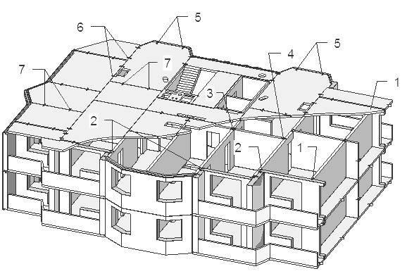
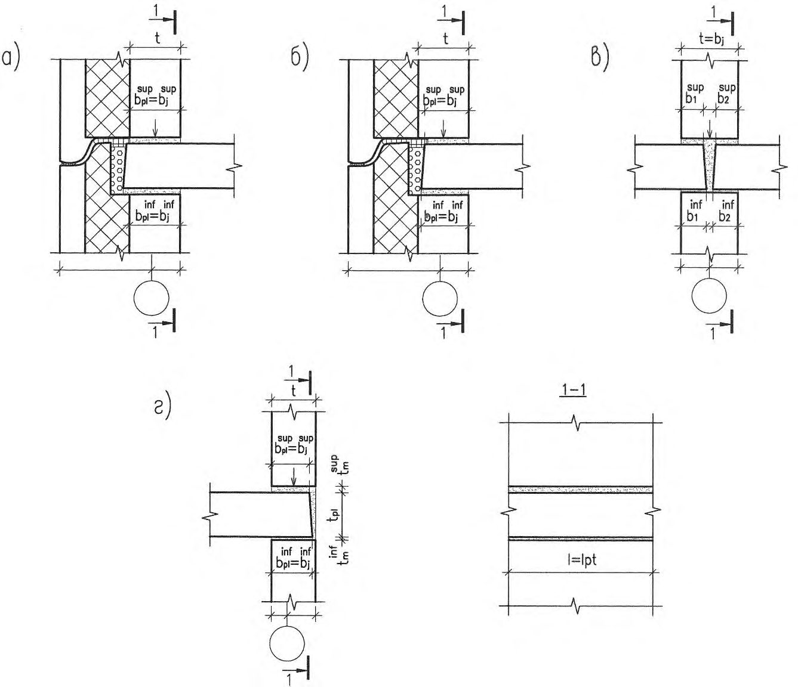
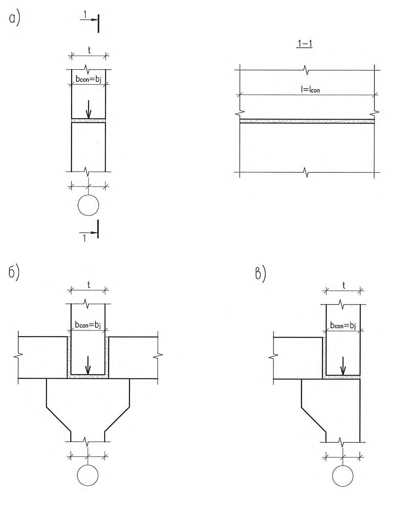
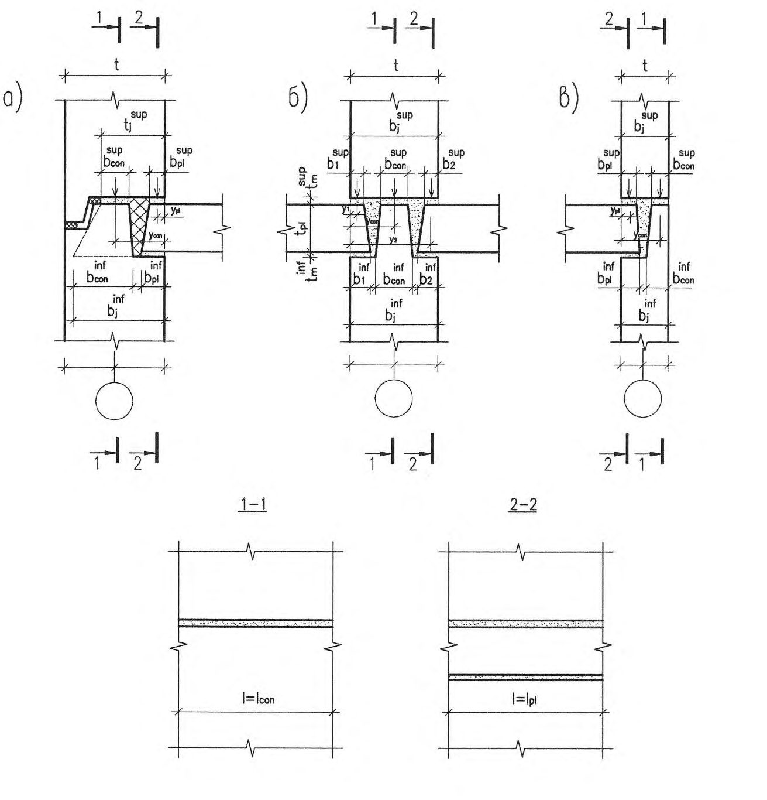
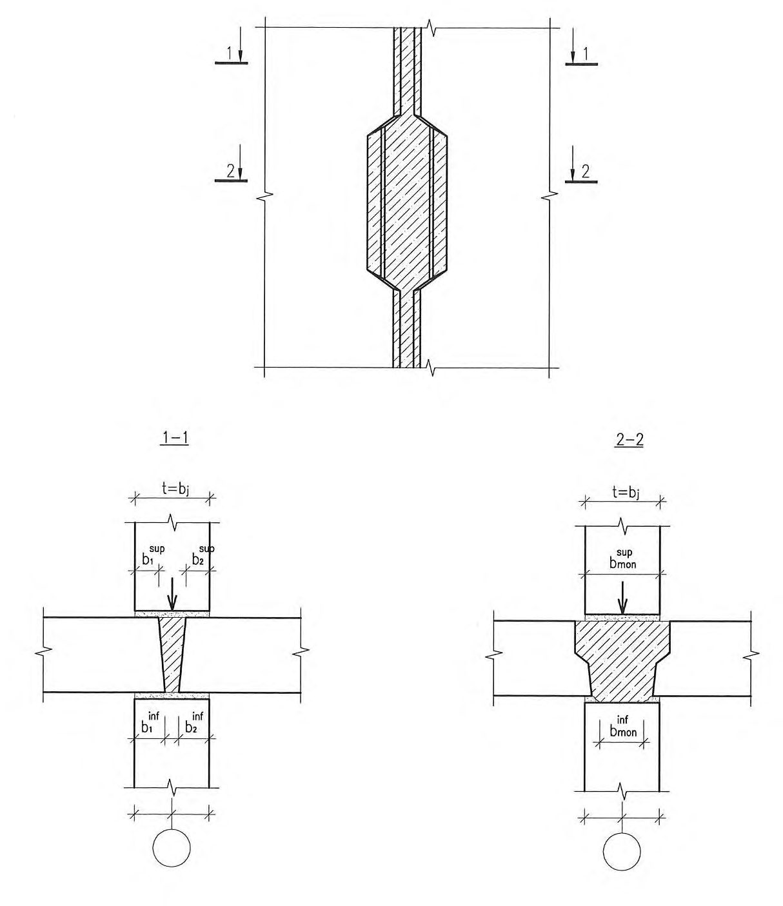
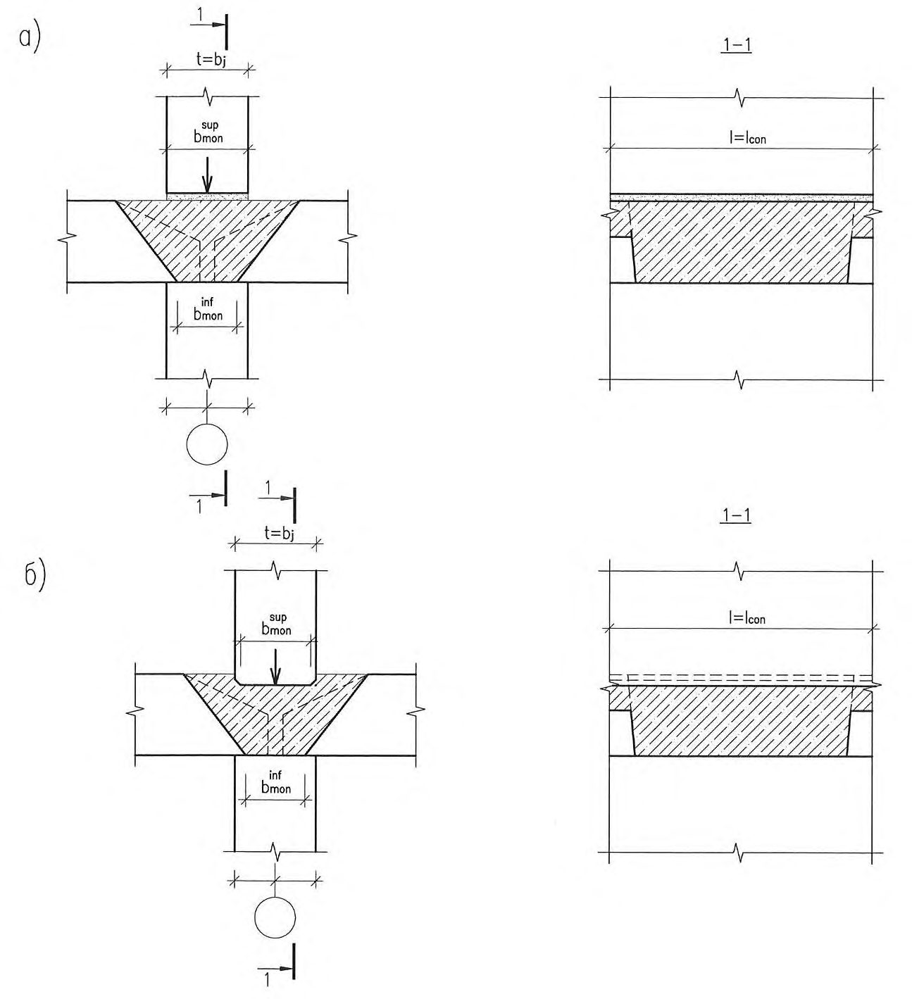
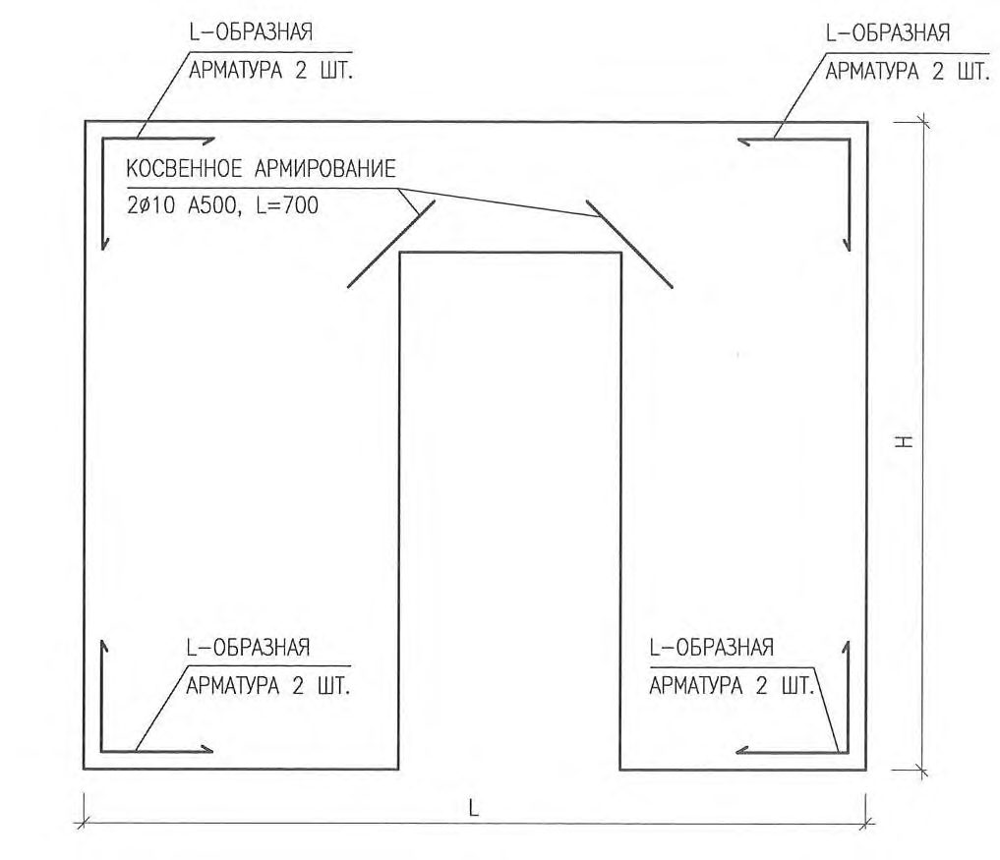
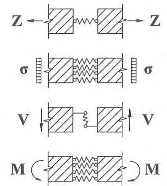
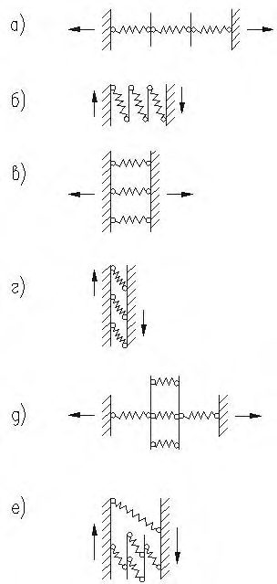
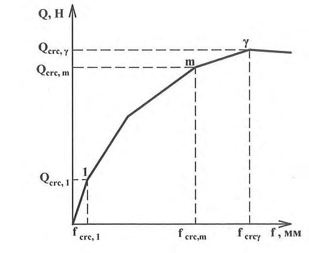

СП 335.1325800.2017 «Крупнопанельные конструктивные системы. Правила проектирова»
О документе: разработчики, утверждение, регистрация, ключевые слова
СВОД ПРАВИЛ
СП 335.1325800.2017
Издание официальное
Москва 2017
1 ИСПОЛНИТЕЛЬ - АО «НИЦ «Строительство» - НИИЖБ им. А.А. Гвоздева
2 ВНЕСЕН Техническим комитетом по стандартизации ТК 465 «Строительство»
3 ПОДГОТОВЛЕН к утверждению Департаментом градостроительной деятельности и архитектуры Министерства строительства и жилищнокоммунального хозяйства Российской Федерации (Минстрой России)
4 УТВЕРЖДЕН И ВВЕДЕН В ДЕЙСТВИЕ приказом Министерства строительства и жилищно-коммунального хозяйства Российской Федерации от 7 декабря 2017 г. № 1630/пр и введен в действие с 8 июня 2018 г.
5 ЗАРЕГИСТРИРОВАН Федеральным агентством по техническому регулированию и метрологии (Росcтандарт)
В случае пересмотра (замены) или отмены настоящего свода правил соответствующее уведомление будет опубликовано в ежемесячно издаваемом информационном указателе «Национальные стандарты». Соответствующая информация, уведомление и тексты размещаются также в информационной системе общего пользования - на официальном сайте разработчика (Минрегион России) в сети Интернет
© Минстрой России, 2017
Настоящий нормативный документ не может быть полностью или частично воспроизведен, тиражирован и распространен в качестве официального издания на территории Российской Федерации без разрешения Минстрой России
СП 335.1325800.2017
Дата введения - 2018-06-08
Введение
6 ВВЕДЕН ВПЕРВЫЕ
Настоящий свод правил разработан с учетом обязательных требований, установленных в федеральных законах от 27 декабря 2002 г. № 184-ФЗ «О техническом регулировании», от 30 декабря 2009 г. № 384-ФЗ «Технический регламент о безопасности зданий и сооружений», и содержит требования к расчету и проектированию конструктивных систем крупнопанельных жилых зданий.
Свод правил разработан авторским коллективом АО «НИЦ «Строительство» - НИИЖБ им. А.А. Гвоздева (руководитель работы - канд. техн. наук С.А. Зенин ; канд. техн. наук Р.Ш. Шарипов , инж. О.В. Кудинов ) при участии ЦНИИСК им. В.А. Кучеренко (канд. техн. наук А.В. Грановский ), АО МНИИТЭП (инженеры Г.И. Шапиро , А.В. Смирнов ), АО «ЦНИИЭПЖилища» (канд. техн. наук В.П. Блажко ) и ООО «Техрекон» (инж. А.Г. Шапиро ).
| УДК 624.04:624.012.3:624.078 | ОКС 91.080.40 |
|---|---|
| Ключевые слова: конструктивная система, железобетон, панель, плита, стык | крупнопанельное здание, |
1Область применения
Настоящий свод правил устанавливает общие требования к расчету и проектированию конструктивных систем крупнопанельных жилых зданий.
Настоящий свод правил распространяется на крупнопанельные здания из сборных железобетонных элементов высотой не более 75 м.
Требования настоящего свода правил не распространяются на проектирование крупнопанельных зданий в районах с сейсмической активностью более 6 баллов.
2Нормативные ссылки
В настоящем своде правил использованы ссылки на следующие нормативные документы:
ГОСТ 2850-95 Картон асбестовый. Технические условия
ГОСТ 4598-86 Плиты древесноволокнистые. Технические условия
ГОСТ 7473-2010 Смеси бетонные. Технические условия
ГОСТ 8829-94 Изделия строительные железобетонные и бетонные заводского изготовления. Методы испытаний нагружением. Правила оценки прочности, жесткости и трещиностойкости
ГОСТ 13015-2012 Изделия бетонные и железобетонные для строительства. Общие технические требования. Правила приемки, маркировки, транспортирования и хранения
ГОСТ 25192-2012 Бетоны. Классификация и общие технические требования ГОСТ 26633-2015 Бетоны тяжелые и мелкозернистые. Технические условия
ГОСТ 27751-2014 Надежность строительных конструкций и оснований.
Основные положения
Large-panel construction system. Design rules
СП 335.1325800.2017
ГОСТ 28013-98 Растворы строительные. Общие технические условия
ГОСТ Р 54923-2012 Композитные гибкие связи для многослойных ограждающих конструкций. Технические условия
СП 2.13130.2012 Системы противопожарной защиты. Обеспечение огнестойкости объектов защиты
СП 16.13330.2017 «СНиП II-23-81* Стальные конструкции».
СП 20.13330.2016 «СНиП 2.01.07-85* «Нагрузки и воздействия»
СП 22.13330.2016 «СНиП 2.02.01-83* «Основания зданий и сооружений»
СП 24.13330.2011 «СНиП 2.02.03-85 «Свайные фундаменты» (с изменением № 1)
СП 28.13330.2017 «СНиП 2.03.11-85 «Защита строительных конструкций от коррозии»
СП 50.13330.2012 «СНиП 23-02-2003 «Тепловая защита зданий»
СП 51.13330.2011 «СНиП 23-03-2003 «Защита от шума» (с изменением № 1)
СП 63.13330.2012 «СНиП 52-01-2003. «Бетонные и железобетонные конструкции. Основные положения» (с изменениями № 1, № 2, № 3)
СП 70.13330.2012 «СНиП 3.03.01-87 Несущие и ограждающие конструкции» (с изменением № 1)
СП 130.13330.2011 «СНиП 3.09.01-85 Производство сборных железобетонных конструкций и изделий»
СП 131.13330.2012 «СНиП 23-01-99* «Строительная климатология» (с изменением № 2)
Примечание - При пользовании настоящим сводом правил целесообразно проверить действие ссылочных документов в информационной системе общего пользования -на официальном сайте федерального органа исполнительной власти в сфере стандартизации в сети Интернет или по ежегодному информационному указателю «Национальные стандарты», который опубликован по состоянию на 1 января текущего года, и по выпускам ежемесячного информационного указателя «Национальные стандарты» за текущий год. Если замечен ссылочный документ, на который дана недатированная ссылка, то рекомендуется использовать действующую версию этого документа с учетом всех внесенных в данную версию изменений. Если заменен ссылочный документ, на который дана датированная ссылка, то рекомендуется использовать версию этого документа с указанным выше годом утверждения (принятия). Если после утверждения настоящего свода правил в ссылочный документ, на который дана датированная ссылка, внесено изменение, затрагивающее положение, на которое дана ссылка, то это положение рекомендуется применять без учета данного изменения. Если ссылочный документ отменен без замены, то положение, в котором дана ссылка на него, рекомендуется применять в части, не затрагивающей эту ссылку. Сведения о действии сводов правил целесообразно проверить в Федеральном информационном фонде стандартов.
3Термины и определения
В настоящем своде правил применены термины, приведенные в СП 63.13330, а также следующие термины с соответствующими определениями:
- 3.1жесткость
- Способность конструктивных элементов сопротивляться деформированию при внешнем воздействии. Основной характеристикой жесткости является коэффициент жесткости, равный силовому воздействию, вызывающему единичное перемещение.
- 3.2конструктивная система здания
- Совокупность взаимосвязанных конструкций здания, обеспечивающих его прочность, жесткость и устойчивость на стадии возведения и стадии эксплуатации при действии всех расчетных нагрузок и воздействий.
- 3.3крупнопанельное здание
- Здание, состоящее из крупных сборных панелей (высотой на этаж) и перекрытий из сборных плит.
- 3.4податливость
- Величина, обратная жесткости. Основной характеристикой податливости является коэффициент податливости, равный перемещению, вызванному единичным силовым воздействием.
- 3.5панель
- Плоскостной сборный элемент заводского изготовления из бетона или железобетона, применяемый для возведения стен и перегородок.
- 3.6панель ненесущая
- Панель, применяемая для возведения стен, которая передает вертикальную нагрузку только от собственного веса на смежные конструкции (перекрытия, несущие стены).
- 3.7панель несущая
- Панель, применяемая для возведения стен, которая помимо вертикальной нагрузки от собственного веса, воспринимает и передает фундаментам нагрузки от перекрытий, крыши, ненесущих стеновых панелей, перегородок и т.д.
- 3.8панель самонесущая
- Панель, применяемая для возведения стен, которая воспринимает и передает фундаментам вертикальную нагрузку только от собственного веса (включая нагрузку от балконов, лоджий, парапетов и т.д.).
- 3.9перегородка
- Ненесущая внутренняя стена из различных видов материалов, предназначенная для разделения здания в пределах этажа на отдельные помещения. СП 335.1325800.2017
- 3.10сборная плита
- Плоскостной сборный элемент заводского изготовления, применяемый при возведении перекрытий и крыш.
4Конструктивные решения крупнопанельных зданий
4.1Общие положения
При расчете по предельным состояниям первой группы эффекты воздействия (нагрузочные эффекты), определяемые при расчете на основные сочетания нагрузок, следует умножать на коэффициент надежности по ответственности.
При расчете по предельным состояниям второй группы коэффициент надежности по ответственности следует принимать равным единице 1 γ = n .
- М50 - для условий монтажа при положительных температурах;
- М100 - для условий монтажа при отрицательных температурах.
Допускается применять в стыках мелкозернистый бетон согласно ГОСТ 25192 и ГОСТ 26633 с учетом требований, приведенных в приложении Ж настоящего свода правил. Класс бетона по прочности на сжатие замоноличивания горизонтального стыка назначают не ниже соответствующего класса бетона стеновых панелей. Класс бетона по прочности на сжатие замоноличивания вертикального стыка принимают не менее В15.
В проекте следует указывать значение необходимой минимальной прочности раствора (бетона) в стыках на различных стадиях строительства здания.
4.2Конструктивные системы
- перекрестно-стеновая - с поперечными и продольными несущими стенами;
- поперечно-стеновая - с поперечными несущими стенами;
- продольно-стеновая - с продольными несущими стенами.
В зданиях перекрестно-стеновой конструктивной системы наружные стены проектируют несущими или ненесущими (навесными), а плиты перекрытий - как опертые по контуру или трем сторонам, в отдельных случаях - по двум (пустотные плиты). Здания перекрестно-стеновой конструктивной системы могут проектироваться высотой до 75 м.
В зданиях поперечно-стеновой конструктивной системы вертикальные нагрузки от перекрытий и ненесущих стен передаются, в основном, на поперечные
СП 335.1325800.2017 несущие стены, а плиты перекрытия работают, преимущественно, по балочной схеме с опиранием по двум противоположным сторонам. Горизонтальные нагрузки, действующие параллельно поперечным стенам, воспринимаются этими стенами. Горизонтальные нагрузки, действующие перпендикулярно поперечным стенам, воспринимаются продольными диафрагмами жесткости.
Продольными диафрагмами жесткости служат продольные стены лестничных клеток, отдельные участки продольных наружных и внутренних стен. Примыкающие к ним плиты перекрытий опирают на продольные диафрагмы, что улучшает работу диафрагм на горизонтальные нагрузки и повышает жесткость перекрытий и здания в целом. Высота зданий этой системы не должна превышать 50 м.
В зданиях продольно-стеновой конструктивной системы вертикальные нагрузки воспринимаются и передаются основанию продольными стенами, на которые опираются перекрытия, работающие преимущественно по балочной схеме. Для восприятия горизонтальных нагрузок, действующих перпендикулярно продольным стенам, необходимо предусматривать вертикальные диафрагмы жесткости. Такими диафрагмами жесткости в зданиях с продольными несущими стенами могут служить поперечные стены лестничных клеток, торцевые, межсекционные и др. Примыкающие к вертикальным диафрагмам жесткости плиты перекрытий опирают преимущественно на них. Такие здания проектируют высотой не более 50 м.
При проектировании зданий поперечно-стеновой и продольно-стеновой конструктивных систем необходимо учитывать, что параллельно расположенные несущие стены, объединенные между собой только дисками перекрытий, не могут перераспределять между собой вертикальные нагрузки. Для обеспечения устойчивости здания при горизонтальных нагрузках следует предусматривать участие стен перпендикулярного направления.
При распределении жесткостей в плане крупнопанельного здания следует стремиться к симметричной расстановке стен. Критерием рационального распределения жесткостей в плане служит наличие первых двух поступательных форм собственных колебаний конструктивной системы здания.
СП 335.1325800.2017
При малопролетных перекрытиях рационально применять перекрестностеновую конструктивную систему. Размеры конструктивных ячеек назначают из условия, что плиты перекрытий опираются на несущие стены по контуру или трем сторонам.
При среднепролетных перекрытиях применяют различные конструктивные системы.
В поперечно-стеновой конструктивной системе наружные продольные стены проектируются ненесущими. В зданиях такой системы несущие поперечные стены проектируются сквозными на всю ширину здания, а внутренние продольные стены располагают так, чтобы они, как минимум, попарно объединяли поперечные стены.
В продольно-стеновой конструктивной системе наружные и внутренние продольные стены проектируются несущими. Шаг поперечных стен, являющихся поперечными диафрагмами жесткости, необходимо обосновывать расчетом и принимать не более 24 м.
- для связей, расположенных в перекрытиях вдоль длины протяженного в плане здания: 15 кН на 1 м преобладающей ширины здания;
- для связей, расположенных в перекрытиях вдоль длины протяженного в плане здания, но на участках сужения здания (кроме сужений, выходящих на торцы): 1 30 l l кН на 1 м ширины суженного в плане здания, где 1 l - ширина узкого участка;
- для связей, расположенных в перекрытиях перпендикулярно длине протяженного в плане здания, а также связей зданий компактной формы: 10 кН на 1 м длины здания.
В качестве преобладающей ширины здания принимается наибольшая ширина здания в плане.
Для зданий, имеющих сложную форму в плане, усилия в связях в плоскости перекрытий должны определяться из расчета здания в целом (т. е. не допускается в целях упрощения расчленять здание на отдельные секции и рассчитывать их отдельно).
Расположенные в одной плоскости внутренние стеновые панели допускается соединять связями только поверху. Сечение связей следует назначать на восприятие растягивающего усилия не менее 50 кН. При наличии связей между стеновыми панелями смежных этажей, а также связей сдвига между стеновыми панелями и плитами перекрытий горизонтальные связи в вертикальных стыках допускается не предусматривать, если они не требуются по расчету.

1 - между панелями наружных и внутренних стен; 2 - то же, продольных наружных несущих стен; 3 - продольных внутренних стен; 4 - то же, поперечных и продольных внутренних стен; 5 - то же, наружных стен и плит перекрытий; 6 -между плитами перекрытий вдоль длины здания; 7 - то же, поперек длины здания
Рисунок 4.1 - Схема расположения связей в крупнопанельном здании
- стенах, для которых по расчету требуется сквозная вертикальная арматура для восприятия растягивающих усилий;
- стенах для обеспечения устойчивости здания к прогрессирующему разрушению. При этом минимальное сечение связей и их количество назначаются из условия восприятия ими растягивающих усилий от веса стеновой панели и опертых на нее плит перекрытия, включая нагрузку от пола и перегородок (но не менее двух в простенке);
- отдельно стоящих несущих стеновых панелях, к которым не примыкают несущие стеновые панели перпендикулярного направления.
СП 335.1325800.2017 петлевых выпусков, соединяемых без сварки; болтовых соединений. Связи следует располагать так, чтобы они не препятствовали качественному замоноличиванию стыков.
Допускается установка в вертикальных стыках стеновых панелей связей в виде бессварных гибких стальных тросовых петель с устройством шпоночных соединений в зданиях высотой не более 50 м при условии обеспечения общей пространственной жесткости и устойчивости конструктивной системы здания, а также восприятия действующих усилий в связях и несущих элементах.
Стальные связи и закладные детали, требуемые по расчету, должны быть защищены от огневых воздействий и от коррозии согласно требованиям [1], СП 2.13330, СП 28.13330 и др. Защита от огневых воздействий (включая неметаллические связи в трехслойных наружных панелях) должна обеспечивать прочность соединений в течение времени, равного величине требуемого предела огнестойкости конструкций, которые соединяются проектируемыми связями.
- температурно-усадочные - для уменьшения усилий в конструкциях и ограничения раскрытия в них трещин вследствие стеснения основанием температурных и усадочных деформаций;
- осадочные - для предотвращения образования и раскрытия трещин в конструкциях вследствие неравномерных осадок фундаментов.
Вертикальные деформационные швы выполняют в виде спаренных поперечных стен, располагаемых на границе планировочных секций. Ширину вертикальных швов следует определять по расчету, но принимать не менее 20 мм в свету.
Температурно-усадочные швы могут доводиться только до фундаментов. При этом при проектировании большеразмерных (один из размеров в плане превышает длину температурного отсека) фундаментных плит или ростверков следует учитывать возможные их дополнительные напряжения и деформации в результате температурных воздействий, усадки и тепловыделения при гидратации бетона.
Осадочные швы должны разделять здание, включая фундаменты, на изолированные отсеки.
Осадочные швы предусматриваются в случаях, когда неравномерные осадки основания в обычных грунтовых условиях превышают предельно допустимые величины, регламентируемые СП 22.13330. Если по расчету обеспечена прочность конструкций здания и основания, а деформации стыков сборных элементов и раскрытие трещин в конструкциях не превышают предельно допустимые значения, допускается осадочный шов не предусматривать.
Расстояния между температурно-усадочными швами (длины температурных отсеков) крупнопанельных зданий определяются расчетом.
Расчет допускается не производить, если при расчетной температуре наружного воздуха минус 40 С и выше расстояние не превышает 40 м.
Для крупнопанельных зданий с каркасно-стеновой конструктивной системой нижних нежилых этажей с диафрагмами жесткости в рассматриваемом направлении расстояние между температурно-усадочными швами допускается принимать равным 40 , в метрах. Коэффициент определяется по формуле
где 10 50 + = w t t -коэффициент, зависящий от изменения средних температур в теплое время года w t , согласно СП 20.13330; h h s h 9 = - коэффициент, зависящий от высоты типового этажа s h и толщины несущих стен h в направлении длины температурного отсека;
- коэффициент, зависящий от влажности наружного воздуха ext ,%, в наиболее жаркий месяц года согласно СП 131.13330; определяется из условия ( ) 1 0,01 0,4 + = ext .
4.3Конструктивные элементы
- по восприятию нагрузки (несущие, самонесущие и ненесущие);
- по расположению (наружные и внутренние);
СП 335.1325800.2017
- по конструкции (однослойные и слоистые: двух и трехслойные).
Самонесущие стены применяются в качестве утепляющих стен выступающих частей здания, торцов здания и других элементов наружных стен, а также внутри здания в виде вентиляционных блоков, лифтовых шахт и тому подобных элементов с инженерным оборудованием.
Допускается принимать в многослойных конструкциях внутренний слой в виде стеновых панелей, бетонных мелких или крупных блоков. При необходимости средний слой принимается из эффективного утеплителя, а наружный слой - из бетона, мелких блоков, защитных плиток или штукатурки.
Соединение слоев в многослойных конструкциях выполняют на стальных или неметаллических связях, сечение и шаг которых определяют по результатам расчетов с учетом закрепления конструкции стены.
При устройстве стальных связей следует предусматривать антикоррозионные мероприятия, обеспечивающие долговечность связей согласно СП 28.13330. Проектирование неметаллических связей следует выполнять согласно требованиям ГОСТ Р 54923.
Применение неметаллических гибких связей должно обеспечивать требуемую огнестойкость многослойной стеновой панели, обеспечивать надежную связь между слоями стеновой панели при пожаре, длительность которого устанавливается согласно требованиям нормативных документов по пожарной безопасности [1], СП 2.13330 и др.
Таблица 4.1
| Материал элементов стены и армирование | Предельная гибкость i l 0 = | Предельное значение отношения h / l 0 для однослойных стен сплошного сечения |
|---|---|---|
| Тяжелый бетон: | ||
| элементы железобетонные | 120 | 35 |
| элементы бетонные | 90 | 26 |
Примечание - Расчетная длина панели l 0 определяется согласно 6.2.4 настоящего свода правил. Радиус инерции вычисляется по формуле I / A i = , где I - момент инерции горизонтального сечения относительно оси, проходящей через центр сечения и параллельной плоскости стены, А - площадь горизонтального сечения, h - толщина стены.
СП 335.1325800.2017
- 40 мм - при опирании по контуру, а также двум длинным и одной короткой сторонам;
- 50 мм - при опирании по двум сторонам и пролете плит 4,2 м и менее, а также по двум коротким и одной длинной сторонам;
- 70 мм - при опирании по двум сторонам и пролете плит более 4,2 м.
Опирание многопустотных плит безопалубочного формования на стеновые панели производится по двум сторонам, то есть по балочной схеме с глубиной опирания не менее 80 мм для плит высотой 220 мм и менее и не менее 100 мм для плит высотой более 220 мм.
Во всех случаях максимальная глубина опирания многопустотных плит безопалубочного формования принимается не более 150 мм.
Опирание по трем и более сторонам многопустотных плит безопалубочного формования (заведение продольной стороны плит в стены) не допускается.
При назначении глубины опирания плит перекрытий следует также учитывать требования СП 63.13330 к анкеровке арматуры на опорах.
Многопустотные плиты перекрытий должны соединяться между собой системой связей, обеспечивающих их совместную работу в горизонтальной плоскости как единого диска. Этот диск должен соединяться системой связей с несущими стенами и диафрагмами жесткости и обеспечивать общую геометрическую неизменяемость системы, подтвержденную расчетами пространственной конструктивной системы на все регламентированные виды воздействий.
Многопустотные плиты перекрытий безопалубочного формования могут быть использованы в зданиях высотой не более 50 м при условии обеспечения требуемой прочности, жесткости и устойчивости формы конструктивной системы крупнопанельного здания.
- платформенные;
- контактные;
- комбинированные;
- монолитные.
В платформенном стыке сжимающая вертикальная нагрузка передается через опорные участки плит перекрытий и два горизонтальных растворных шва. В монолитном стыке сжимающая нагрузка передается через слой монолитного бетона, уложенного в полость между торцами плит перекрытий (возможен монтаж стеновой панели на растворный шов, уложенный в зоне контакта монолитного бетона и стеновой панели). В контактном стыке сжимающая нагрузка передается непосредственно через растворный шов или упругую прокладку между стыкуемыми поверхностями сборных элементов стены. Горизонтальные стыки, в которых сжимающие нагрузки передаются через участки двух или более типов, называются комбинированными.
Платформенный стык (рисунок 4.2) применяется в качестве основного конструктивного решения для панельных стен при двухстороннем опирании плит перекрытия и при одностороннем опирании плит на глубину не менее 0,75 толщины стены (или несущего слоя стены). Толщина горизонтальных растворных швов назначается на основе расчета точности изготовления и монтажа сборных конструкций. Если расчет точности не выполняется, то толщины растворных швов назначают равными 20 мм; размер зазора между торцами плит перекрытия принимается не менее 20 мм. Верхний растворный шов устраивают в уровне верхней поверхности плит перекрытия. При расположении верхнего шва ниже верхней поверхности плит следует обеспечивать контроль качества укладки раствора в шов. а, б - наружных трехслойных панелей; в - внутренних стен при двухстороннем опирании плит перекрытия; г - внутренних стен при одностороннем опирании плит перекрытия Рисунок 4.2 - Платформенные стыки сборных стен

Контактный стык (рисунок 4.3) применяют при опирании плит перекрытия на консольные уширения стен, а также в местах опирания самонесущих стен друг на друга (без опирания перекрытия на стену). а - с опиранием самонесущих стен друг на друга; б - с опиранием внутренних стен при двухстороннем опирании плит перекрытия; в - с опиранием внутренних стен при одностороннем опирании плит перекрытия

Рисунок 4.3 - Контактные стыки сборных стен
В комбинированном контактно-платформенном стыке (рисунок 4.4) вертикальная нагрузка передается через две опорные площадки: контактную (в месте непосредственного опирания стеновой панели через растворный шов) и платформенную (через опорные участки плит перекрытия). Контактноплатформенный стык преимущественно применяют при одностороннем опирании плит перекрытия на стены. Толщины растворных швов назначаются аналогично толщинам швов в платформенном стыке.

а - наружных панелей; б, в
- внутренних стен
Рисунок 4. 3 - Контактно-платформенные стыки сборных стен
СП 335.1325800.2017
В комбинированном платформенно-монолитном стыке (рисунок 4.5) вертикальная нагрузка передается через опорные участки плит перекрытия и бетон замоноличивания полости стыка между торцами плит перекрытия. Для обеспечения неразрезности плиты перекрытия необходимо соединять между собой на опорах сварными или петлевыми связями, сечение которых определяют по расчету.
Для обеспечения качественного заполнения бетоном полости между торцами плит перекрытия при платформенно-монолитном стыке толщину зазора по верху плит следует принимать не менее 40 мм, а по низу - 20 мм. При толщине зазора менее 40 мм стык рассчитывается как платформенный.
Полость замоноличивания стыка по длине стены может быть непрерывной или прерывистой (при точечном опирании плит перекрытия на стены). При платформенно-монолитном стыке над и под плитой перекрытия необходимо устраивать горизонтальные растворные швы.
В монолитном стыке (рисунок 4.6) сжимающая нагрузка передается через слой монолитного бетона, уложенного в полость между торцами плит перекрытия перекрытий (возможен монтаж стеновой панели на растворный шов, уложенный в зоне контакта монолитного бетона и стеновой панели). При этом стеновую панель на монтаже необходимо опускать ниже верхнего уровня перекрытия (замоноличивания стыка) не менее, чем на 20 мм. Точность монтажа обеспечивается, например, при помощи маяков.
Монтаж сборных стен на схватившийся бетон (рисунок 4.6, а) может осуществляться не менее чем через сутки после укладки бетона при условии набора бетоном не менее 30 % проектной прочности. Также возможен вариант монтажа с одновременным бетонированием стыка (рисунок 4.6, б).
Сборные плиты перекрытия при монолитных стыках необходимо соединять сварными или петлевыми арматурными связями, обеспечивающими неразрезность.
При устройстве монолитных стыков, а также комбинированных платформенно-монолитных стыков следует использовать глубинные вибраторы с малыми диаметрами наконечников.
Рисунок 4.4 - Платформенно-монолитный стык сборных стен

а - с монтажом верхней панели после замоноличивания стыка; б - с одновременным замоноличиванием всего узла; монтажные фиксаторы условно не показаны

Рисунок 4.5 - Варианты монолитных горизонтальных стыков сборных стен
- бетонными или железобетонными шпонками, образуемыми путем замоноличивания полости стыка бетоном;
- бесшпоночными соединениями в виде замоноличенных бетоном арматурных выпусков из панелей;
- сваренными между собой закладными деталями, заанкеренными в теле панелей;
- плитами перекрытий, заведенными в платформенные стыки.
Шпонки следует проектировать преимущественно трапециевидной формы. Глубина шпонки принимается не менее 20 мм, а угол наклона площадки смятия к направлению, перпендикулярному плоскости сдвига, не более 30°. Минимальный размер отверстия в плане плоскости стыка, через которое замоноличивается стык, принимается не менее 80 мм. Следует предусматривать уплотнение бетона в стыке глубинным вибратором с малыми диаметрами наконечников.
В бесшпоночных соединениях сдвигающие усилия воспринимаются сварными или петлевыми связями, замоноличенными бетоном в полости вертикального стыка.
Сварные соединения панелей на закладных деталях применяются в стыках стен с целью сокращения или исключения монолитных работ на строительной площадке. В стыках наружных стен с внутренними сварные соединения панелей на закладных деталях следует располагать вне зоны, где возможен конденсат влаги при перепаде температур по толщине стены.
4.4Конструкции нижних этажей зданий многоцелевого назначения
При наличии нерегулярности конструктивной системы верхних жилых этажей и нижних нежилых этажей следует предусматривать переходные или распределительные конструкции (балки, плиты, технические этажи).
- для встроенных учреждений и предприятий, имеющих зальные помещения;
- для встроенно-пристроенных учреждений и предприятий с залами, глубина которых превышает ширину жилого дома (15-20 м), с торговой площадью от 650 до 1000 м² .
При проектировании пристроенных объемов (в т.ч. встроенно-пристроенных) следует использовать преимущественно комбинированные каркасно-стеновые системы.
5Расчет конструктивных систем крупнопанельных зданий
5.1Основные принципы расчета конструктивных систем
По результатам расчета на первом этапе оценивают эксплуатационную пригодность конструктивной системы здания на соответствие требованиям действующих нормативных документов. Для этого определяют ряд основных параметров конструктивной системы, значения которых сравнивают с предельно допустимыми значениями, приведенными в СП 20.13330, СП 22.13330, СП 63.13330. Также по результатам расчета на первом этапе определяются усилия и деформации, возникающие в основных несущих конструкциях, а также узлах их сопряжений.
СП 335.1325800.2017
На втором этапе выполняются конструктивные расчеты по прочности, трещиностойкости и деформациям несущих элементов конструктивной системы и узлов их сопряжений на основе усилий, определенных на первом этапе. По результатам указанных расчетов производится конструирование элементов и узлов их сопряжений с учетом требований действующих нормативных документов и настоящего свода правил.
Расчет в случае локального разрушения конструкций производится только по предельным состояниям первой группы. Развитие неупругих деформаций, перемещения конструкций и раскрытие в них трещин в рассматриваемой чрезвычайной ситуации не ограничиваются.
Устойчивость крупнопанельного здания против прогрессирующего обрушения следует обеспечивать наиболее экономичными способами:
- рациональным конструктивно-планировочным решением здания с учетом возможности возникновения рассматриваемой аварийной ситуации;
- конструктивными мерами, обеспечивающими неразрезность конструкций;
- применением материалов и конструктивных решений, обеспечивающих развитие в элементах конструкций и их соединениях пластических деформаций.
Реконструкция здания, в частности, перепланировка и переустройство помещений не должны снижать его устойчивость против прогрессирующего обрушения.
5.2Требования к расчету конструктивных систем
- расчет горизонтальных перемещений верха;
- расчет форм собственных колебаний;
- расчет устойчивости формы и устойчивости положения (опрокидывание);
- расчет перекосов этажных ячеек;
- расчет максимальной (средней) осадки, разности осадок фундамента;
- расчет прогибов плит перекрытий;
- расчет ускорений колебаний перекрытий верхних этажей;
- расчет усилий и перемещений, возникающих в несущих элементах, а также узлах их сопряжений, по результатам общего расчета конструктивной системы.
Величина горизонтальных перемещений верха здания не должна превышать
СП 335.1325800.2017 предельно допустимой величины, установленной согласно требованиям СП 20.13330.
Величина перекосов вертикальных ячеек не должна превышать / 300 s h , где s h - высота этажа, равная расстоянию между срединными плоскостями плит смежных этажей.
Запас по устойчивости формы конструктивной системы должен быть не менее чем двукратным. Запас по устойчивости характеризует превышение эксплуатационной нагрузки на конструктивную систему, при которой возникает возможность потери общей устойчивости здания.
Расчет конструктивной системы на устойчивость положения (опрокидывание) выполняют на действие опрокидывающего (от горизонтальной нагрузки) и удерживающего (от вертикальной нагрузки) моментов. Величины моментов принимают относительно крайней точки фундамента. Коэффициент запаса по устойчивости положения конструктивной системы должен быть более 1,5.
Предельно допустимая величина прогибов устанавливается в соответствии с требованиями СП 20.13330.
Возникающие вследствие деформаций основания крены здания должны ограничиваться, исходя из условий эксплуатации технологического оборудования, указанных в задании на проектирование.
Предельно допустимые значения совместных неравномерных деформаций основания и здания устанавливаются расчетом исходя из обеспечения необходимой прочности, устойчивости и трещиностойкости конструкций.
5.3Расчетные модели конструктивных систем крупнопанельных зданий
6Расчеты элементов и стыков
6.1Расчет фундаментов
6.2Расчет стен
Необходимо выполнять расчет прочности опорных зон стен в соответствии с приложением Б настоящего свода правил.
где H0 высота этажа в свету (между плитами перекрытий); ηp -коэффициент, зависящий от жесткости узла сопряжения стен с перекрытиями и принимаемый равным:
0,8 - при жестких узлах;
1,0 - при шарнирных узлах;
0,9 - при платформенном опирании сборных плит перекрытий. При этом в случае одностороннего опирания плиты перекрытий должны быть заведены на стену не менее чем на 0,8 t , где t - толщина стены.
В остальных случаях коэффициент ηp определяется методами строительной механики и принимается не менее 0,8. ηw -коэффициент, учитывающий влияние стен перпендикулярного направления.
Закрепление простенков в местах их сопряжения со стенами перпендикулярного направления следует учитывать в случае, когда расстояние d между стенами, которые примыкают к простенку, не более 3 H0 , а расстояние от свободного края простенка до примыкающей к нему стены - более 1,5 H0 . Сборные стены, кроме того, должны быть соединены между собой замоноличенными сварными арматурными связями, расположенными не реже чем через 100 см по высоте стены.
Коэффициент ηw для указанных выше случаев следует определять по формуле
а для участка между свободным краем простенка и примыкающей к нему стеной по формуле
где d - ширина рассматриваемого простенка.
В остальных случаях ηw = 1,0.
6.3Расчет плит
При расчете плит перекрытий по предельным состояниям второй группы частичное защемление в платформенных стыках от всех нагрузок, действующих сверх собственного веса плит, учитывается для всех междуэтажных перекрытий при применении раствора швов проектной марки М100 и выше.
Для учета частичного защемления опорных зон плит и предотвращения образования в них нормальных трещин расчет на частичное защемление выполняют согласно приложению Е настоящего свода правил.
6.4Расчет узлов сопряжений и связей
При расчете необходимо учитывать, что участки шпонок, в которых возникают растягивающие напряжения поперек шва, в расчете на сдвиг не учитываются.
При расчете прочности бетонных или растворных шпонок на сдвиг, учитывая хрупкий характер их разрушения, сдвиговые усилия необходимо принимать с учетом коэффициента надежности по материалу равным 1,50.
СП 335.1325800.2017
7Конструктивные требования
7.1Основные положения
7.2Плиты перекрытий
Минимальный диаметр горячекатанной арматуры принимают не менее 6 мм, холоднодеформированной - не менее 3 мм.
СП 335.1325800.2017 помощи установленных заранее отсекателей бетона (заглушек). Глубина заделки пустот принимается не менее трех глубин опирания плиты.
Заделку сквозных технологических и коммуникационных отверстий в плитах перекрытий выполняют растворами на безусадочных цементах.
- при расположении на углу или на поперечном торце плиты: 600/400;
- при расположении на продольном торце плиты и в средней части плиты: 100/400.
Размер отверстия l относится к длинной стороне плиты.
Круглые отверстия в средней части плиты - 200 мм.
Отверстия выполняют в заводских условиях в свежеуложенном бетоне во время производственного процесса либо на строительной площадке при помощи специального фрезерного или бурового оборудования. Пробивка отверстий и проемов в плитах безопалубочного формования не допускается.
При толщинах плит безопалубочного формования более 300 мм размеры отверстий b уменьшаются на 200 мм, диаметр круглых отверстий принимается не более 135 мм.
При ширине проемов b , превышающей ширину плиты, следует предусматривать специальные конструктивные мероприятия по их усилению, например, устройство обрамляющих проемы специальных стальных или монолитных балок. Указанные мероприятия должны иметь соответствующие расчетные обоснования согласно СП 63.13330 и СП 16.13330.
СП 335.1325800.2017
- армирование (напрягаемая или ненапрягаемая арматура) должно быть распределено равномерно по ширине элементов;
- максимальное расстояние между осями ненапрягаемой арматуры в плитах не должно превышать 300 мм;
- в наиболее удаленных ребрах необходимо располагать, как минимум, один арматурный элемент (напрягаемый или ненапрягаемый);
- при ширине элементов более 1200 мм следует предусматривать продольную ненапрягаемую арматуру в направлении ширины элемента. Диаметр данной арматуры принимается не менее 5 мм, расстояние между стержнями - не менее 500 мм;
- минимальное количество напрягаемых арматурных элементов принимается следующим:
- при ширине элемента 1200 мм и более - не менее 4;
- при ширине элемента от 600 до 1200 мм - не менее 3;
- при ширине элемента до 600 мм - не менее 2;
- толщина ребер принимается не менее наибольшего из следующих значений /10 h и 20 мм ( h - толщина плиты);
- толщина полок принимается не менее наибольшего из следующих значений h 1,5 и 20 мм ( h - толщина плиты).
7.3Стеновые панели
Расстояние между стержнями рабочей вертикальной арматуры по одной грани
СП 335.1325800.2017 панели (шаг вертикальных каркасов) принимается не более 400 мм, между стержнями горизонтальной арматуры - не более 600 мм. Площадь сечения вертикальной арматуры устанавливается по расчету, но принимается не менее требуемой для внецентренно сжатых железобетонных элементов. Диаметр вертикальных и горизонтальных стержней принимается не менее 8 мм. Поперечные стержни (перпендикулярные плоскости панели) следует располагать по вертикали с шагом не более 20 d , где d - диаметр продольных стержней каркаса, по горизонтали - не более 600 мм.
Если требуемая по расчету площадь сечения продольной вертикальной арматуры меньше площади сечения, соответствующей минимальному проценту армирования, то в железобетонных панелях внутренних стен допускается принимать расстояние между стержнями вертикальной арматуры - не более 600 мм, между стержнями горизонтальной арматуры - не более 1000 мм.
Подвески предназначены для передачи вертикальной нагрузки от наружного бетонного слоя панели на внутренний несущий слой. Подвески конструируют так, чтобы они обеспечивали передачу вертикальных нагрузок на внутренний слой без
СП 335.1325800.2017 участия других связей панели. С этой целью подвеска должна иметь растянутый и сжатый подкосы, надежно заанкеренные в наружном и внутреннем слоях панели. Металлические связи составных панелей допускается выполнять в виде податливых соединений закладных деталей. Панель должна иметь не менее двух подвесок.
Подкосы предназначены для фиксации положения наружного слоя относительно внутреннего и ограничения взаимного сдвига слоев в горизонтальной плоскости. Подкосы конструируют по типу подвесок, но располагают в горизонтальной плоскости.
Распорки предназначены для передачи от наружного слоя на внутренний горизонтальных нагрузок от ветра и других воздействий. Распорки допускается использовать для фиксации положения плитного теплоизоляционного материала при бетонировании панели.
Установку конструктивных вертикальных и горизонтальных каркасов выполняют по площади и периметру стеновой панели. Расстояние между стержнями вертикальной арматуры по одной грани панели (шаг вертикальных каркасов) принимается не более 1 м.
Площадь сечения конструктивной вертикальной и горизонтальной арматуры, устанавливаемой у каждой из сторон панели, следует принимать не менее 0,2 см² /м. Диаметр конструктивной продольной арматуры стеновых панелей принимается не менее 5мм, диаметр поперечной арматуры - не менее 4 мм.
(того же направления), требуемой по расчету как для сплошной конструкции. Проемы в сборных бетонных панелях также окаймляются конструктивной арматурой. Для ограничения раскрытия трещин в углах проемов предусматривается дополнительное армирование наклонными стержнями, Г-образными сетками или другими способами (Рисунок 7.1). По низу дверных проемов в панелях следует предусматривать железобетонную перемычку или арматурный каркас.
Рисунок 7.1 -Пример расположения косвенного армирования проемов и Lобразной арматуры

7.4Фундаменты
7.5Узлы сопряжений и связи
АПриложение А. Определение податливости соединений элементов несущих конструкций
А.1 Коэффициентом податливости соединения называется величина, численно равная деформации соединения, вызванной единичной сосредоточенной или распределенной силой.
Коэффициенты податливости при растяжении t , сдвиге и коэффициенты податливости перемычек при перекосе lin следует определять от действия сосредоточенных сил. Коэффициенты податливости при сжатии c и повороте следует определять от действия распределенных сил.
Для соединений, имеющих несколько характерных стадий работы (например, до образования трещин в соединении и после), коэффициенты податливости (жесткости) следует принимать для каждой стадии дифференцированно. Деформации соединения в этом случае определяются как сумма деформаций от приращений усилий на отдельных этапах.
Основные виды соединений и размерность коэффициентов податливости приведены в таблице А.1.
Таблица А.1
| Коэффициент податливости | Обозначение | Размерность | Схема соединения |
|---|---|---|---|
| При растяжении | t | мм/Н (см/кгс) | |
| При сжатии | с | мм³ /Н (см/кгс) | |
| При сдвиге | | мм/H (см/кгс) | |
| При повороте | | 1/МН (1/кгс) |
При соединении элементов системой связей следует различать следующие случаи их расположения: последовательное (Рисунок А.1, а, б); параллельное (Рисунок А.1, в, г); смешанное (Рисунок А.1, д, е).

а, б - последовательная; в, г - параллельная; д, е - смешанная
Рисунок А.1 - Схема соединений
Коэффициенты податливости λ соединения, состоящего из системы сосредоточенных связей, следует определять по формулам: для последовательно расположенных связей
для параллельно расположенных связей
В смешанном случае выделяют группы однородно расположенных связей. Для каждой из них вычисляют коэффициент податливости либо как для последовательно расположенных связей, либо как для параллельно расположенных.
Коэффициент податливости соединения, имеющего сосредоточенные и распределенные связи, определяют путем замены распределенных связей на эквивалентные по жесткости сосредоточенными.
А.2 Коэффициент податливости при растяжении t соединения сборных элементов в виде сваренных между собой и замоноличенных бетоном арматурных выпусков следует определять по формуле
где crc a - ширина раскрытия трещин, нормальных к арматурной связи, вызванных растягивающими напряжениями в связи s , определяемая в соответствии с СП 63.13330.
Деформации растяжения связей в виде петлевых выпусков диаметром 8-12 мм, соединенных между собой скобами из арматурной стали и замоноличенных бетоном класса не ниже В15, допускается определять как для сварных связей, площадь которых соответствует площади поперечного сечения арматуры петлевого выпуска. Диаметр арматуры скобы должен быть при этом не менее диаметра петлевого выпуска.
А.3 Коэффициент податливости при сжатии горизонтального растворного шва m следует определять в зависимости от способа укладки, прочности раствора и среднего значения сжимающих напряжений в растворном шве m .
При кратковременном сжатии для раствора прочностью на сжатие 1 МПа и более, при толщине шва 10 - 20 мм коэффициент податливости растворного шва m , мм³ /Н, следует определять по формулам:
где m - среднее значение сжимающих напряжений в растворном шве, МПа; m R - кубиковая прочность раствора, МПа; m t - толщина растворного шва, мм.
При наличии скосов на торцах плит перекрытия размеры опорных площадок, через которые передается нагрузка в платформенном стыке, следует принимать различными при расчете податливости платформенного стыка по верхнему и нижнему швам.
Коэффициенты податливости растворных швов при кратковременном сжатии при расчете на нагрузки, действующие на стадии эксплуатации здания, допускается принимать по таблице А.2.
Таблица А.2
| Среднее значение сжимающих напряжений в растворном шве σ m , МПа | Коэффициент податливости растворного шва толщиной 20 мм при кратковременном сжатии λ m (мм³ /Н) при кубиковой прочности раствора (МПа) | Коэффициент податливости растворного шва толщиной 20 мм при кратковременном сжатии λ m (мм³ /Н) при кубиковой прочности раствора (МПа) | Коэффициент податливости растворного шва толщиной 20 мм при кратковременном сжатии λ m (мм³ /Н) при кубиковой прочности раствора (МПа) | Коэффициент податливости растворного шва толщиной 20 мм при кратковременном сжатии λ m (мм³ /Н) при кубиковой прочности раствора (МПа) | Коэффициент податливости растворного шва толщиной 20 мм при кратковременном сжатии λ m (мм³ /Н) при кубиковой прочности раствора (МПа) |
|---|---|---|---|---|---|
| 1 | 2,5 | 5 | 10 | 20 | |
| При 3 2 1 1,15 m m R = | 0,03 | 0,016 | 0,01 | 0,0065 | 0,004 |
| При 3 2 2 1 2 m m R = | 0,1 | 0,054 | 0,034 | 0,021 | 0,013 |
Для горизонтальных швов бетонирования стен (возведение стен на строительной площадке) из монолитного бетона классов В7,5 - В15 коэффициент податливости при сжатии принимается равным для тяжелого бетона 0,01 = m мм³ /Н.
При сжатии горизонтального растворного шва длительной нагрузкой коэффициент податливости следует определять по формуле
где φt - характеристика ползучести шва, принимаемая как φt = 1,0.
А.4 Коэффициент податливости при сжатии c соединения элементов следует определять в зависимости от конструктивного типа стыка.
Для контактного горизонтального стыка , в котором сжимающую нагрузку передают через слой раствора толщиной не более 30 мм, коэффициент податливости при сжатии c,con следует определять по формуле
где A - площадь горизонтального сечения стены в уровне расположения проемов; Acon - площадь контактного участка стыка, через которую передается сжимающая нагрузка.
Для монолитного горизонтального стыка , в котором сжимающая нагрузка передается через растворный шов в уровне верха перекрытия и слой бетона, коэффициент податливости при сжатии c,mon определяют по формуле
где hmon - высота (толщина) слоя бетона замоноличивания в стыке;
Emon - модуль деформации бетона замоноличивания стыка, который следует определять:
- на стадии эксплуатации как начальный модуль упругости бетона замоноличивания стыка;
- в процессе монтажа как модуль деформации бетона замоноличивания стыка в зависимости от скорости изменения его прочностных и деформационных характеристик в процессе монтажа;
Amon - площадь монолитного участка стыка (за минусом опорных участков перекрытий и других ослаблений сечения стыка).
Для платформенного горизонтального стыка , в котором сжимающая нагрузка передается через опорные участки плит перекрытий и два растворных шва, уложенных между плитами перекрытий и соединяемыми элементами, коэффициент податливости при сжатии c,pl определяют по формуле
где m , m - коэффициенты податливости при сжатии соответственно верхнего и нижнего горизонтальных растворных швов; hpl - высота (толщина) опорной части плиты перекрытия;
Epl - начальный модуль упругости бетона опорной части плиты перекрытий;
Apl - площадь платформенных участков стыка, через которые передаются сжимающие напряжения. При неодинаковых размерах опорных площадок вверху и внизу плиты перекрытия принимается их среднее значение. Заполнение пространства между плитами перекрытий («рюмка») в расчете податливости горизонтального стыка не учитывается.
Для платформенно-монолитного стыка , в котором сжимающая нагрузка передается через платформенный участок площадью Apl и монолитный участок площадью Amon , коэффициент податливости при сжатии λc,pl,mon определяют по формуле
где λc,pl , λc,mon -коэффициенты податливости при сжатии, соответственно, монолитной и платформенной частей горизонтального стыка.
Для горизонтального шва на прокладках («сухой» шов) стыка коэффициент податливости λc при кратковременном сжатии определяют по формуле
где c t - толщина сжатой прокладки в горизонтальном шве;
Ec - начальный модуль упругости прокладки; c - безразмерный коэффициент; c - среднее значение нормальных напряжений, сжимающих прокладки.
Величины Ec и c допускается определять по таблице А.3.
Коэффициент податливости горизонтального шва на прокладках при длительном сжатии λct допускается принимать не менее 1,2 λc . В общем случае данный тип швов применяется в зданиях высотой не более 15 м.
Таблица А.3
| Материал прокладки | Толщина прокладки, мм | E c , МПа | α c |
|---|---|---|---|
| Асбестовый картон марки КАОН по ГОСТ 2850-95 | 3 | 7 | 2 |
| Асбестовый картон марки КАП по ГОСТ 2850-95 | 4 | 2,8 | 1,8 |
| Асбестовый картон марки КАОН по ГОСТ 2850-95 | 6 | 9 | 1,7 |
| Древесно-волокнистая плита мягкая М-1, М-2 (ДВП) по ГОСТ 4598-86 | 12 | 1,8 | 1,8 |
| Древесно-волокнистая плита мягкая М-1, М-2 (ДВП) по ГОСТ 4598-86 | 16 | 2,2 | 1,2 |
| Синтетические сетки из полиэфирной нити, слоями | 5 | 14,2 | 3,5 |
| Лавсановое волокно прессованное | 6 | 6 | 4,4 |
| Рубероид, слоями | 3,77 | 14 | 4,2 |
| Пергамин, слоями | - | 15 | 2,5 |
| Паронит, слоями | 4,2 | 22 | 4 |
| Линолеум ПВХ | 1,8 | 12 | 8,3 |
| Песок средней крупности в оболочке из стеклоткани | 30 | 80 | 0 |
А.5 Коэффициент податливости при сдвиге , мм/Н, соединения из двух сборных элементов принимается равным сумме коэффициентов податливости для сечений, примыкающих к каждому из соединяемых элементов.
Для бетонного шпоночного соединения из k n однотипных шпонок коэффициент податливости при взаимном сдвиге сборного элемента и бетона замоноличивания ,b определяется по формуле
где l loc - условная высота шпонки, принимаемая при определении ее податливости при сдвиге, равная 250 мм;
Aloc - площадь сжатия шпонки, через которую передается в соединении сжимающее усилие, мм² ;
Eb - модуль деформации бетона сборного элемента, МПа;
Emon - модуль деформации бетона замоноличивания вертикального стыка, МПа.
Для армированного шпоночного соединения до образования в стыке наклонных трещин коэффициент податливости при сдвиге ,s следует определять как для бетонного шпоночного соединения ,b , а после образования наклонных трещин по формуле
,m - коэффициент податливости при сдвиге для бесшпоночного соединения сборных элементов с помощью замоноличенных бетоном арматурных связей, определяемый по формуле
где ds - диаметр арматурных связей между сборными элементами, мм; ns - количество арматурных связей между сборными элементами.
Опертые по контуру панели перекрытий при платформенном стыке стеновых панелей могут рассматриваться как связи сдвига между стенами перпендикулярного направления. Для такой связи при марке раствора в швах не ниже М100 и деформациях сдвига не более 0,5 мм коэффициент податливости при сдвиге 6 , 5 10 - = pl мм/Н.
Определение податливости панелей плит перекрытий, как связей сдвига между стенами поперечного направления, допускается выполнять с использованием численных методов и расчетных моделей, позволяющих отразить действительную работу конструкций и их сопряжений.
А.6 Коэффициентом податливости перемычки называется величина, численно равная взаимному линейному смещению опор по вертикали от единичной поперечной силы, вызывающей перекос перемычки.
Диаграмму зависимости «поперечная сила - взаимное линейное смещение опор» для перемычки принимают в виде ломаной кривой (Рисунок А. 2). Точки перелома на ней отражают характерные изменения деформированного состояния или расчетной схемы перемычки, вызванные образованием очередной вертикальной либо наклонной трещины.
, 1 ,..., m - точки диаграммы, соответствующие образованию вертикальных трещин и наклонной трещины

Рисунок А. 2 - Диаграмма зависимости «поперечная сила Q - взаимное линейное смещение f опор» для перемычки при перекосе
Коэффициенты податливости перемычек при перекосе следует определять исходя из следующих предпосылок и допущений:
- выделяют три последовательные стадии деформирования перемычек, границами которых являются моменты появления первых нормальных и наклонных трещин;
- принимается, что нормальные трещины первоначально образуются в опорных сечениях перемычки (в местах ее заделки в простенки). По мере увеличения усилий, вызывающих перекос перемычки, могут образовываться дополнительные нормальные трещины;
- наклонные трещины возникают после образования всех нормальных трещин. В тавровой перемычке наклонная трещина развивается только в пределах высоты стенки и, дойдя до полки, переходит в продольную (горизонтальную) трещину.
Коэффициент податливости перемычки (до образования трещин) lin следует определять по формулам:
- для перемычки прямоугольного сечения
- для перемычки таврового сечения
где hlin - высота сечения перемычки;
Eb - начальный модуль упругости бетона перемычки;
Gb - модуль сдвига бетона перемычки;
Ilin - момент инерции поперечного сечения перемычки;
Alin - площадь поперечного сечения перемычки. В случае таврового сечения (составного или монолитного) за величину Alin принимается площадь сечения ребра перемычки на всю высоту, включая толщину полки; l - пролет перемычки в свету; l red - приведенный пролет перемычки, определяемый по формуле
При применении расчетной схемы диафрагмы в виде составного стержня с непрерывными продольными связями коэффициент податливости перемычки (до образования трещин) lin следует определять по формулам:
- для перемычки прямоугольного сечения
- для перемычки таврового сечения
где 1(2) s - расстояние от середины пролета перемычки в свету до оси левого (правого) простенка, в который защемлена перемычка; et H - высота этажа;
1(2) - коэффициент податливости левого (правого) простенка при местном изгибе и сдвиге в пределах этажа, который следует определять по формуле
где I 1(2) - осевой момент инерции сечения в плане левого (правого) простенка;
A 1(2) - площадь сечения в плане левого (правого) простенка. В случае таврового либо двутаврового сечения за величину A 1(2 ) следует принимать площадь сечения стенки тавра (двутавра) на всю высоту, но без учета свесов полок; μ - коэффициент, принимаемый равным:
- 1,2 - для простенков с прямоугольным сечением в плане;
- 1,0 - для простенков таврового или двутаврового сечения в плане.
Коэффициент податливости перемычки в фазе образования вертикальных трещин crc определяют по формулам:
- для перемычки прямоугольного сечения
- для перемычки таврового сечения
где m - количество вертикальных трещин в одной из растянутых опорных зон перемычки; определяется по (А.23) и округляется до ближайшего целого числа:
где l crc - среднее расстояние между соседними вертикальными трещинами, которое следует определять в соответствии с СП 63.13330;
Wcrc - момент сопротивления трещинообразованию для нижней (верхней) растянутой опорной зоны перемычки;
Rbt,ser -расчетное сопротивление бетона растяжению для предельных состояний второй группы, принимается согласно СП 63.13330;
Qlin - поперечная сила в перемычке; acrc - ширина раскрытия нормальных трещин в растянутой опорной зоне перемычки от единичной поперечной силы Qlin = 1,0 Н. Величина acrc определяется в соответствии с СП 63.13330.
Учет податливости примыкающих простенков производят аналогично приведенной выше последовательности.
Поперечные силы в перемычке ,1 crc Q , Q crc m , , вызывающие образование 1-й и m -й вертикальных трещин соответственно, следует определять по формулам:
Коэффициент податливости перемычки в фазе образования наклонных трещин определяют по формулам: для перемычки прямоугольного сечения с отношением 1,5 lin h l :
для перемычки прямоугольного сечения с отношением 1,5 lin h l :
для перемычки таврового сечения:
где If - момент инерции;
Af - площадь поперечного сечения ребра перемычки высотой f h h -lim , где hf - высота полки.
Учет податливости примыкающих простенков производят аналогично приведенной выше последовательности.
Поперечную силу, вызывающую образование наклонной трещины, y Q определяют по формуле
где γ - угол наклона трещины к горизонтали, который следует определять по формуле
При 1,5 lin h l допускается угол наклона трещины к горизонтали принимать равным 34 1,5 = = arctg °.
БПриложение Б. Расчет горизонтальных стыков по прочности
Б.1 Прочность горизонтальных стыков при сжатии определяется с учетом следующих предпосылок:
- вместо номинальных (проектных) размеров опорных площадок и толщин растворных швов вводят расчетные размеры, определяемые с учетом возможных неблагоприятных отклонений номинальных размеров вследствие допусков на изготовление и монтаж конструкций и других случайных факторов; при этом случайный эксцентриситет продольных сил не учитывается;
- для платформенного стыка с двухсторонним опиранием плит перекрытий заполнение раствором пространства между торцами смежных плит в расчете несущей способности не учитывается. При наличии скосов на торцах плит перекрытия размеры опорных площадок, через которые передается нагрузка в платформенном стыке, следует принимать различными при расчете прочности платформенного стыка по верхнему и нижнему швам;
- с учетом шарнирной расчетной схемы соединения сборных стеновых элементов в горизонтальном стыке сжимающие напряжения считаются равномерно распределенными по толщине стены для каждой из опорных площадок; для стыков, имеющих несколько опорных площадок, учитывается возможная неравномерность распределения сжимающих усилий между площадками;
- при использовании расчетной схемы с упругим соединением сборных элементов в горизонтальном стыке сжимающие напряжения в стыке следует определять, предполагая, что сборные элементы и растворные швы работают в упругой стадии.
Б.2 Прочность горизонтального стыка при сжатии проверяется по формуле
где Nj -продольная сжимающая сила, действующая в уровне рассчитываемого опорного сечения стены; t -толщина стены (для трехслойных стен с гибкими связями - толщина внутреннего несущего слоя); dj - расчетная ширина простенка в зоне стыка. Для стеновой панели с оконными проемами расчетная ширина простенка в зоне стыка принимается равной сумме ширины простенка d на уровне расположения оконных проемов и участка, длина которого в каждую сторону от простенка принимается равной половине высоты перемычек hlin , примыкающих к простенку, при этом для стыка между стеновыми панелями с оконными проемами величина hlin принимается равной половине высоты перемычки над оконным проемом, а для стыка между стеновой панелью с оконным проемом и стеновой панелью без проемов - равной половине высоты перемычки под оконным проемом.
При наличии местных ослаблений горизонтального стыка бороздами, углублениями для шпонок, распаячных коробок и др., расчетную ширину dj следует определять за минусом размеров этих ослаблений.
Rс -приведенное сопротивление сжатию горизонтального стыка для опорных сечений, определяемое по формуле:
где Rbw -расчетное значение сопротивления бетона стены при сжатии (призменная прочность), принимаемое в соответствии с СП 63.13330 с учетом особенностей работы бетона в конструкции (характер нагрузки, способ изготовления стеновой панели, условия окружающей среды и пр.). Для стыков стеновых панелей, усиленных в зоне стыка поперечными сварными каркасами или сетками, вместо расчетного значения сопротивления бетона Rbw учитывается приведенное сопротивление red bw R , равное
где ηs - коэффициент, учитывающий усиление опорных зон стеновых панелей поперечными сварными каркасами или сетками; определяют по следующей формуле:
где Аtr - площадь сечения одного поперечного стержня горизонтального каркаса (сетки); l tr - расстояние между крайними продольными стержнями каркаса; ctr - шаг поперечных стержней по длине стены; str - шаг каркасов по высоте стены; t - толщина стены.
Влияние косвенного армирования опорной зоны стеновой панели следует учитывать при выполнении следующих условий:
- диаметр ds и расчетное сопротивление растяжению Rs продольных стержней не менее диаметра dsw и расчетного сопротивления поперечных стержней Rsw соответственно;
- шаг каркасов по высоте стеновой панели не более 0,5 t ;
- шаг поперечных стержней по длине стеновой панели не более 15 ds ;
- класс бетона стены не менее В15;
- толщина горизонтального растворного шва между панелями не более 30 мм;
- прочность раствора горизонтального шва не менее 2,5 МПа;
т - коэффициент, учитывающий влияние горизонтальных растворных швов; определяют по следующей формуле
где tm - расчетная величина толщины горизонтального растворного шва. Для горизонтальных растворных швов расчетную толщину шва tm следует принимать равной nom m t 1,4 ( nom m t - номинальная толщина горизонтального шва), но не менее следующих значений:
- для горизонтального растворного шва при монтаже стеновых панелей по маякам, а также для растворных швов в горизонтальных контактных стыках стеновых панелей - 25 мм;
- для растворного шва под плитой перекрытия без маяков - 20 мм;
- при наличии фактических данных о смещениях сборных элементов и толщинах швов следует принимать их значения; bm - расчетная ширина растворного шва (размер по толщине стены). Значение расчетной ширины растворного шва b m следует принимать:
- для стыков с двухсторонним опиранием перекрытий равной толщине стены t ;
- для нижнего растворного шва комбинированного стыка:
- для контактного, монолитного и верхнего растворного шва комбинированного стыка при bj = t :
где bj номинальный (проектный) размер (ширина) опорной площадки, через которую передается в стыке сжимающая нагрузка (для контактно-платформенного стыка величина определяется с учетом зазора между контактной и платформенной площадками стыка);
р - расчетное значение возможных смещений в стыке сборной плиты перекрытия относительно проектного положения, р = 10 мм;
w - расчетное значение возможных смещений в стыке стеновой панели относительно проектного положения, принимаемое равное при монтаже с применением фиксаторов или шаблонов, ограничивающих взаимные смещения параллельно расположенных стен, δw = 10 мм; при монтаже с применением подкосов δw = 15 мм; m R - кубиковая прочность раствора горизонтального шва, МПа; w B - величина, численно равная классу по прочности на сжатие бетона сборного элемента стены, МПа.
При возведении здания в зимнее время на растворах с противоморозными добавками прочность стыка должна быть проверена на момент оттаивания раствора. При типовом проектировании значение прочности раствора с противоморозными добавками на момент оттаивания рекомендуется принимать не более 0,25 значения марки раствора.
При возведении здания методом замораживания без применения противоморозных добавок или прогрева стыков при проверке прочности стыков на момент оттаивания значение коэффициента т следует умножать на коэффициент условий работы, учитывающий неравномерность оттаивания по толщине стены раствора и равный 0,8.
Для монолитных стыков стеновых панелей, заполняемых бетоном после установки панели верхнего этажа, коэффициент т следует принимать равным 1,0. При опирании плит перекрытия без раствора коэффициент т следует принимать равным 0,5;
j - коэффициент, учитывающий конструктивный тип стыка, неравномерность распределения сжимающей нагрузки между опорными площадками стыка и эксцентриситет продольной силы относительно центра стыка. Коэффициент j вычисляется в зависимости от конструктивного решения узла.
Если при расчете принимают шарнирное соединение сборных элементов в горизонтальном стыке, то коэффициент j вычисляют следующим образом: для платформенного стыка коэффициент j определяют по формуле
где bpl -суммарный размер по толщине стены платформенных площадок, через которые в стыке передается сжимающая нагрузка. При скошенных торцах плит перекрытий прочность стыка проверяется раздельно в уровне верхней и нижней опорных зон сборных элементов стены, принимая соответствующие размеры платформенных площадок;
pl - возможное суммарное смещение в платформенном стыке плит перекрытий относительно их проектного положения, принимаемое для платформенных стыков с двухсторонним опиранием плит перекрытий равным pl = 1,4 р ;
pl - коэффициент, учитывающий неравномерность загружения платформенных площадок и принимаемый равным pl = 0,9 при двухстороннем опирании плит перекрытий на стены;
pl - коэффициент, зависящий от соотношения расчетных прочностей при сжатии бетона стены Rbw и бетона опорных участков плит перекрытий Rbр и принимаемый равным: для стен из тяжелого и легкого бетона:
СП 335.1325800.2017
для стен из ячеистого бетона:
где Rbр - расчетное значение сопротивления бетона плит перекрытий при сжатии (призменная прочность), принимаемое в соответствии с действующими нормативными документами с учетом особенностей работы бетона в конструкции (характер нагрузки, способ изготовления плиты, условия окружающей среды и пр.).
При усилении опорных зон плит перекрытий сплошного сечения горизонтальными сварными сетками из арматурной проволоки диаметром 5 мм с ячейками 50 × 50 мм расчетное сопротивление бетона плит перекрытий Rbр следует увеличивать на 20%. Шаг сеток не должен превышать 0,7 глубины опирания плит перекрытий. Сетки должны объединяться в пространственный каркас.
В случае применения многопустотных плит перекрытий коэффициент pl следует дополнительно умножать на коэффициент vac , принимаемый:
- при механизированной заделке пустот в заводских условиях путем добетонирования с пригрузом опорных участков плит перекрытий vac = 0,9. В случае применения многопустотных плит перекрытий безопалубочного формования с овальными пустотами коэффициент vac следует дополнительно умножать на коэффициент условий работы , принимаемый равным vac1 =0,9. Допускается значение коэффициента vac1 определять по экспериментальным данным;
- в остальных случаях
где vac - коэффициент условий работы, принимаемый равным:
- 0,5 - при заделке пустот свежеотформованными бетонными пробками, изготовленными одновременно с плитами перекрытий;
- 1,0 - при незаделанных пустотах, а также при несовершенной заделке пустот в построечных условиях (например, закладка кирпичом на растворе);
- t f - наименьшая толщина ребра между пустотами плиты перекрытия;
- Sf - наименьший шаг пустот.
Для платформенных стыков с односторонним опиранием плит перекрытий значение коэффициента j следует определять по экспериментальным данным; для контактного стыка , в котором сжимающая нагрузка передается только через контактные участки стыка, коэффициент ηj вычисляют по формуле
где bcon - размер по толщине стены контактной площадки, через которую в стыке передается сжимающая нагрузка; δcon -расчетное изменение номинального размера контактной площадки, принимаемое равным:
- для стыков с односторонним опиранием плит перекрытий, в которых хотя бы один край контактной площадки совпадает с гранью стены, а также для контактных стыков вне зоны опирания перекрытий δcon = δw ;
- в остальных случаях δcon = 0; dcon - размер по длине стены контактного участка стыка (за минусом гнезд для опирания плит перекрытий); ηcon - коэффициент, принимаемый равным меньшему из значений коэффициентов ηloc и ηfor ; ηloc коэффициент, учитывающий повышение прочности стыка при местном сжатии; определяют по формуле
где γloc - коэффициент, принимаемый равным: 1,1 - при t b m 0,6 ; 1,0 - в остальных случаях; ycon - расстояние от центра контактной площади до ближайшей вертикальной грани стены; ηfor - коэффициент, учитывающий форму контактной площадки и принимаемый равным:
- для площадки в форме выступа вверху или внизу стеновой панели высотой con con b t при прочности раствора в горизонтальном растворном шве bw m B R , МПа:
1,2 - для тяжелого бетона;
1,1 - для ячеистого бетона и бетона на пористых заполнителях;
1,0 - при bw m B R (МПа);
- для контактной площадки высотой con con b t 2 : ηfor =1,0;
- для контактной площадки высотой con con con b t b 2 : ηfor принимается по интерполяции между указанными выше краевыми значениями; для контактно-платформенного стыка , в котором сжимающая нагрузка передается через платформенный и контактный участки, коэффициент ηj принимают равным меньшему из значений величин sup j , inf j , которые соответствуют случаям разрушения стыка по контактному или платформенному участкам в уровне верхнего или нижнего растворных швов и вычисляют по формулам:
bcon - номинальный (проектный) размер по толщине стены контактного участка стыка; sup pl b , inf pl b - номинальный (проектный) размер по толщине стены платформенного участка стыка в уровне верхнего и нижнего растворного швов;
pl , pl - вычисляют по правилам определения для платформенного стыка; ηloc - вычисляют по правилам определения для контактного стыка; σpl - среднее значение местных сжимающих напряжений, передаваемых на стену по платформенной площадке от плиты перекрытия, которая непосредственно оперта в стыке; sup m , inf m - коэффициенты для нижнего и верхнего растворных швов и определяют по Б.5; δ1, δ2 -величины, характеризующие возможные изменения номинальных размеров соответственно контактного и платформенного участков стыка:
- при bj < t
для монолитного стыка , в котором вся сжимающая нагрузка передается через слой бетона, уложенного в полость стыка, коэффициент j вычисляется по формуле:
где bmon, dmon - размеры, соответственно, по толщине и длине стены монолитного участка стыка; mon - возможное смещение стены по монолитному участку стыка, принимаемое равным:
- pw mon = - при одностороннем опирании плит перекрытий;
- p mon 1.4 = - при двухстороннем опирании плит перекрытий; ηmo - коэффициент, зависящий от соотношения классов по прочности на сжатие бетона замоноличивания стыка Bb,mon и опорного участка стены Bbw и принимаемый равным меньшему из значений коэффициентов ηloc и ηfor ,
для стыков с односторонним опиранием плит перекрытий:
для стыков с двухсторонним опиранием плит перекрытий:
для платформенно-монолитного стыка , в котором сжимающая нагрузка передается через платформенные и монолитный участки, коэффициент j принимают равным меньшему из двух значений коэффициентов j,pl и j,mon , соответствующих разрушению стыка по платформенному или монолитному участкам и определяемых по формулам:
где mon red = Вb,топ/Вbр 1;
топ - коэффициент, принимаемый равным 0,8 при замоноличивании стыка обычным тяжелым бетоном, и 0,7 - при замоноличивании стыка раствором.
Определение эксцентриситетов.
Если при расчете принимается упругое или жесткое соединение сборных элементов в горизонтальном стыке, то коэффициент j , вычисленный по шарнирной схеме соединения сборных элементов, следует умножать на коэффициент ηe , который определяют следующим образом:
где ej - эксцентриситет по толщине стены равнодействующей продольной сжимающей силы относительно центра стыка, определяемый по формуле
где Mj - изгибающий момент в опорном сечении стены, определяемый из расчета конструктивной системы;
Nj -продольная сжимающая сила в опорном сечении стены, определяемая из расчета конструктивной системы; bт -величина, определяемая аналогично как при определении значения коэффициента ηm .
При определении изгибающего момента Мj следует учитывать, что часть нагрузок, вызывающих усилия в стыке, прикладываются до того, как бетон замоноличивания в стыках сборных элементов или бетон монолитных стен наберет расчетную прочность. Для полносборных зданий к ним следует относить нагрузки от веса конструкции не менее, чем двух этажей здания. Усилия от этих нагрузок рекомендуется определять в предположении шарнирного соединения элементов в узле.
Значения коэффициентов т и j допускается определять на основе испытаний горизонтальных стыков при условии согласования результатов и методов испытаний с разработчиками настоящего свода правил.
Б.3 Расчет прочности горизонтальных стыков допускается выполнять с использованием численных методов и расчетных моделей, позволяющих отразить действительную работу конструкций и их сопряжений.
ВПриложение В. Расчет вертикальных стыков по прочности
В.1 Расчет вертикальных стыков сборных элементов по прочности выполняют с использованием следующих допущений:
- прочность соединений при действии сдвигающих и нормальных сил проверяется независимо;
- при расчете соединения на усилия сдвига, вызванные общим изгибом стены в собственной плоскости, сдвигающие силы считаются равномерно распределенными между однотипными шпонками (связями), расположенными в пределах высоты одного этажа;
- при наличии разнотипных шпонок (связей) в пределах высоты одного этажа усилия между ними распределяются обратно пропорционально их податливости при сдвиге;
- при расчете соединения на усилия сдвига, вызванные местными усилиями, например, вследствие перепада температур по толщине стены, учитывается неравномерность распределения усилий между шпонками или связями;
- при учете сопротивления сдвигу перекрытий или монолитных поясов в уровне перекрытий усилия сдвига, приходящиеся на одну шпонку (связь) Vk и на перекрытие (монолитный пояс) Vp , определяют по формулам:
где k - коэффициент податливости при сдвиге одной шпонки (связи);
p - то же, плиты перекрытия или монолитного пояса в уровне перекрытия; mk - общее количество шпонок в стыке.
Коэффициенты податливости определяют согласно положению приложения А.
В.2 Для бесшпоночных соединений расчетная прочность при сдвиге принимается равной меньшему из двух значений усилий Vsl и Vcrc , вызывающих разрушение стыка соответственно от взаимного проскальзывания соединяемых частей стены и от образования в зоне стыка наклонных трещин.
Усилия Vsl и Vcrc вычисляют по формулам:
где η - коэффициент трения, принимаемый для вертикальных стыков равным:
0,6 - для стыков сборных элементов;
1,4 - для вертикальных узлов сопряжения стеновых панелей из бетонов разных видов через разделительную сетку;
Rs,tr -расчетное сопротивление растяжению поперечной арматуры, пересекающей стык (шов бетонирования);
As,tr - суммарная площадь сечения поперечной арматуры, пересекающей стык (шов бетонирования);
Rcrc - сопротивление стыка образованию наклонных трещин, определяемое по формуле
Rbt - расчетное сопротивление растяжению бетона замоноличивания стыка;
Aν - площадь вертикального сечения стыка (вдоль плоскости сдвигающих усилий).
В.3 Для шпоночных стыков следует различать бетонные и железобетонные соединения.
Сопротивление сдвигу бетонного шпоночного соединения вычисляется без учета сопротивления арматурных связей, сечение которых назначается по конструктивным соображениям. Для вертикальных стыков наружных и внутренних стен следует предусматривать связи для восприятия усилий распора, равных не менее чем 0,2 сдвигающей силы в стыке. Для бетонных шпоночных соединений не допускается образование трещин.
В железобетонном шпоночном соединении площадь сечения поперечных связей As,tr должна удовлетворять условию
где - коэффициент, равный отношению силы распора в шпоночном соединении к сдвигающей силе, воспринимающей шпонки, и определяемый по формуле
где - угол наклона площадки смятия к направлению, перпендикулярному плоскости сдвига;
V - сдвигающая сила в стыке;
Rs,tr - расчетное сопротивление растяжению поперечной арматуры стыка; при расположении поперечной арматуры только в уровнях верха и низа этажа или в уровне перекрытия сопротивление Rs,tr принимается с коэффициентом 0,8;
- коэффициент трения, принимаемый равным 0,6.
В.4 Расчетная прочность при сдвиге Vkb одной шпонки бетонного шпоночного соединения принимается равной меньшему из значений усилий Vsh,b, Vc,b, Vcrc,b , соответствующих разрушению бетонной шпонки, соответственно, от среза, смятия и образования наклонных трещин, определяемых по формулам:
где Rbt - расчетное сопротивление бетона замоноличивания стыка на растяжение;
Rb,loc сопротивление шпонки местному смятию, принимаемое равным: 1,5 Rb -для одиночных шпонок; 0,8 Rb - для многошпоночных соединений;
Ash - площадь среза шпонки;
Аc - площадь смятия шпонки;
Аj - площадь продольного сечения стыка, приходящаяся на одну шпонку, определяемая по формуле
где sk - шаг шпонки; bтоп - размер по толщине стены полости замоноличивания стыка.
В.5 Для железобетонных шпоночных соединений следует выполнять расчеты для двух стадий работы при сдвиге: до и после образования трещин.
До образования трещин от сдвигающих усилий соединение рассчитывается как бетонное, без учета сопротивления арматуры. Усилие сдвига, вызывающее образование трещин, допускается принимать равным несущей способности при сдвиге бетонного шпоночного соединения. При этом число шпонок, учитываемое в расчете, принимается не более 3.
После образования трещин расчетная прочность при сдвиге железобетонной шпонки принимается равной меньшему из следующих значений усилий Vsh,s , Vch,s , Vcrc,s , вызывающих разрушение железобетонного шпоночного соединения, соответственно, от среза, смятия и сжатия вдоль наклонных трещин, определяемых по формулам:
где Vsh,b, Vc,b - сопротивления сдвигу бетонных шпонок (не более 3 шпонок);
Rs,tr - сопротивление растяжению поперечной арматуры стыка, принимаемое не более величины max R = 2,5 Rbt Ash / Atr ;
, tr s
Atr - площадь сечения поперечной арматуры стыка; t k - глубина шпонки; t j - расстояние между стыкуемыми поверхностями стены.
В.6 Прочность перекрытия при сдвиге вдоль вертикального стыка стен V p определяют по формуле
где Rbt,p - расчетная прочность бетона перекрытия при растяжении; t p - толщина плиты перекрытия; t - толщина стены; bef -эффективная ширина, учитывающая сопротивление срезу плиты перекрытия за пределами толщин стены и принимаемая равной:
6tp - для сборно-монолитных перекрытий;
2tp - для сборных перекрытий при двухстороннем опирании;
СП 335.1325800.2017 tp - для сборных перекрытий при одностороннем опирании.
Расчет вертикальных соединений по прочности на действие сжимающих сил выполняют аналогично расчету горизонтальных стыков по прочности (приложение Б).
Растягивающие усилия, возникающие в вертикальных стыках сборных стен, следует воспринимать арматурными связями.
В.7 Расчет прочности вертикальных стыков допускается выполнять с использованием численных методов и расчетных моделей, позволяющих отразить действительную работу конструкций и их сопряжений.
В.8 При необходимости, коэффициенты условий работы в расчетных зависимостях, приведенных выше, могут быть уточнены при условии согласования с разработчиками настоящего свода правил.
ГПриложение Г. Расчет шпоночного соединения плит перекрытия
Г.1 Шпоночное соединение плит перекрытий рассчитывают на максимальную разность поперечных сил, возникающих в соседних плитах. Разница поперечных сил возникает вследствие наличия нагрузки на одной плите при отсутствии ее на соседней, в местах локального приложения нагрузок от перегородок, оборудования и т.д (рисунок Г.1).
Рисунок Г. 1 -Шпоночные соединения плит перекрытий

Г.2 Прочность шпоночного соединения плит перекрытий на сдвиг обеспечивается при выполнении условия
где Q - поперечное усилие, действующее в шве в вертикальном направлении; hпл - высота плиты перекрытия;
Rbt - прочность бетона шпонки плиты на растяжение.
Расчет прочности шпоночных соединений плит перекрытий допускается выполнять с использованием численных методов и расчетных моделей, позволяющих отразить действительную работу конструкций и их сопряжений.
Г.3 Среднее напряжение продольного среза в швах между сборными элементами плит перекрытий должно быть ограничено до 0,1 МПа при гладких поверхностях торцов плит и до 0,15 МПа - при шероховатых.
Величину напряжения продольного среза ud допускается определять по формуле
где h - высота шва;
L - длина соединения;
V - сдвигающая сила в плоскости диска перекрытия.
Г.4 Для восприятия горизонтальных растягивающих усилий, возникающих в крайних швах диска перекрытия, необходимо предусматривать установку дополнительных связей (продольной арматуры).
Площадь дополнительных связей (продольной арматуры) s A определяют по формуле
где М - максимальный изгибающий диафрагменный момент от горизонтальной нагрузки;
Rs - расчетное сопротивление арматуры растяжению; z - внутреннее плечо, принимаемое равным из соотношений: z/b =0,9, при b/l ≤0,5; z/b =0,8, при 0,5< b/l <1, где l - длина пролета; b - ширина пролета.
Допускается принимать z= 0,8 b , где b - ширина пролета в направлении горизонтальной нагрузки. При невозможности установки связей в крайние швы диска перекрытия допускается в качестве связей рассматривать арматуру, установленную дополнительно к рабочей в крайних плитах перекрытия. При этом должны быть установлены связи между смежными крайними плитами, обеспечивающие неразрезность.
ДПриложение Д. Рекомендации по расчету конструкций, расположенных в зоне контакта типовых этажей с нижними (нежилыми) этажами и при наличии нерегулярности конструкций по высоте
При выполнении расчетов конструкций, расположенных в зоне контакта этажей здания друг с другом при наличии нерегулярности несущих конструкций по высоте, необходимо учитывать следующий ряд особенностей.
Нерегулярность несущих конструкций возникает при изменении планировки крупнопанельного здания по высоте. Например, при стыке конструкций первого (нежилого) этажа с типовым.
Нерегулярности могут возникать не только в процессе проектирования, но и в процессе эксплуатации здания. Примером этому может служить перепланировка с устройством не предусмотренных проектом проемов в несущих стеновых конструкциях.
При наличии нерегулярностей по высоте здания, возникает неравномерность в распределении изгибных жесткостей вертикальных несущих элементов здания. При этом значительная разность изгибных жесткостей вертикальных несущих элементов здания может привести к изменению основных принципов работы горизонтальных стыков здания и допущению их расслоения с последующим перераспределением усилий между несущими конструкциями.
При проектировании крупнопанельных зданий с нерегулярностью несущих конструкций по высоте расчет следует выполнять в пространственной постановке с учетом действительной диаграммы работы материала горизонтальных стыков конструктивных элементов. Рекомендуется расчет выполнять с учетом стадийности монтажа конструкций здания.
ЕПриложение Е. Учет частичного защемления опорных участков плит перекрытий
Е.1 При расчетах плит перекрытий необходимо учитывать конструктивными мероприятиями образование опорных (отрицательных) моментов от частичного защемления сборных элементов плит в горизонтальных стыках после установки вышерасположенных панелей стен.
Е.2 Отсутствие необходимости усиления опорных сечений определяется из условия
где оп M -опорный момент от частичного защемления; bt M -несущая способность нормального сечения плиты перекрытия на опорном участке.
Е.3 Опорный момент от частичного защемления М оп определяют по формуле
где k -коэффициент, учитывающий долю нагрузок q и принимаемый равным 0,4; q - постоянные и временные нагрузки на плиту перекрытия без учета собственного веса плиты; l - пролет плиты.
Е.4 Несущую способность нормального сечения плиты M bt определяют по формуле
где bt R - расчетное сопротивление бетона осевому растяжению по предельным состояниям первой группы;
0 1,75 W Wpl = -пластический момент сопротивления для нормального сечения плиты без учета арматуры для крайнего растянутого волокна;
0 W - упругий момент сопротивления для нормального сечения плиты без учета арматуры, определяемый согласно общим правилам сопротивления материалов для крайнего растянутого волокна.
Е.5 При несоблюдении условия (Е.1) необходимо с помощью конструктивных мероприятий обеспечить усиление опорной зоны плит перекрытий. Усиление выполняют путем установки дополнительной арматуры (отдельными стержнями или плоскими каркасами) в продольные межплитные швы или в предварительно вскрытые пустоты многопустотных плит перекрытий с последующим замоноличиванием.
Допускается в качестве конструктивных мероприятий усиления опорной зоны плит перекрытий использовать армированную бетонную стяжку по верху плиты. Толщина стяжки принимается не менее 40 мм.
Во всех случаях необходимо обеспечить требуемую анкеровку арматуры согласно СП 63.13330.
Е.6 Для опорных участков плит перекрытий, рассчитываемых на изгибающий момент от частичного защемления, также необходимо выполнять проверку наклонных сечений по прочности согласно СП 63.13330.
Е.7 Допускается принимать значение коэффициента k по результатам испытаний горизонтальных стыков при условии согласования результатов и методов испытаний с разработчиками настоящего свода правил.
СП 335.1325800.2017
Общие требования к монтажу конструкций и качеству бетонирования
ЖПриложение Ж. стыковых соединений мелкозернистым бетоном
Ж.1 Возведение крупнопанельных зданий (монтаж сборных элементов, устройство стыков и т.д.) необходимо выполнять в соответствии с требованиями СП 70.13330. Монтаж должен выполняться только квалифицированными специалистами под контролем ответственного инженерно-технического персонала в соответствии с требованиями проектной документации, специальных указаний (при наличии) и настоящего свода правил.
Ж.2 При производстве работ необходимо контролировать наличие и правильное положение всех предусмотренных проектом арматурных деталей и закладных деталей стыка. Перед началом бетонирования стыков и установки арматурных деталей следует убедиться в отсутствии каких-либо повреждений стыков. Непосредственно перед бетонированием стыки должны быть очищены (в частности, продуты сжатым воздухом).
Ж.3 Замоноличивание стыков выполняется после проверки правильности установки конструкций и приемки соединений.
Ж.4 Для приготовления бетонных смесей применяют быстротвердеющие портландцементы и используют химические добавки: пластифицирующие, ускоряющие твердение и противоморозные. Для обеспечения достаточной подвижности бетонной смеси принимают марку по удобоукладываемости П4 или П5 (ГОСТ 7473).
Ж.5 Наибольший размер фракции заполнителя бетона стыков принимают 8 мм.
Ж.6 Бетонирование стыков должно обеспечивать полное заполнение стыков мелкозернистым бетоном. Для уплотнения бетонной смеси в горизонтальных и вертикальных стыках (включая монолитные и платформенно-монолитные горизонтальные стыки, вертикальные шпоночные стыки) следует использовать глубинные вибраторы с малыми диаметрами наконечников. Качество выполнения стыков следует подтверждать визуальным и инструментальным обследованием специализированной организацией.
Ж.7 При выполнении работ при отрицательных температурах наружного воздуха должен быть разработан специальный раздел ППР, учитывающий бетонирование в зимнее время.
Ж.8 Уплотнение бетонной смеси, уход за ней (температурно-влажностные режимы, сроки распалубки, особенности производства работ в зимних условиях, в жаркую и сухую погоды и т.д.), режимы выдерживания должны обеспечивать достижение требуемой прочности швов до нагружения конструкции.
Ж.9 При приемке работ по устройству стыков необходимо контролировать:
- соответствие конструкции стыка проекту (наличие деталей, полнота заполнения шва, отклонение размеров шва и положения арматурных элементов);
- качество бетона по прочности, а в необходимых случаях по морозостойкости, водонепроницаемости и т.д.
СП 335.1325800.2017
ИПриложение И. Общие указания к расчетным моделям крупнопанельных зданий
И.1 Расчетные схемы крупнопанельных зданий классифицируются:
- по характеру учета пространственной работы (одно-, двух- и трехмерные);
- по виду неизвестных (дискретные, дискретно-континуальные и континуальные);
- по виду конструкции, положенной в основу расчетной схемы (стержневые, пластинчатые, комбинированные).
И.2 При одномерной расчетной схеме здание рассматривается как тонкостенный стержень или система стержней, упруго или жестко защемленных в основании. Предполагается, что поперечный контур стержня (системы стержней) неизменяем.
При двухмерной расчетной схеме здание рассматривается как плоская конструкция, способная воспринимать только такую внешнюю нагрузку, которая действует в ее плоскости. Для определения усилий в стенах от горизонтальной нагрузки условно принимается, что все стены, параллельные действию нагрузки, расположены в одной плоскости и имеют одинаковые горизонтальные перемещения в уровне перекрытий.
При трехмерной (пространственной) расчетной схеме здание рассматривается как пространственная система, способная воспринимать приложенную к ней пространственную систему сил. Трехмерная расчетная схема наиболее точно учитывает особенности взаимодействия несущих конструкций, но расчет на ее основе наиболее сложен.
И.3 При стержневых расчетных схемах несущая система здания рассматривается в виде набора параллельно расположенных балок с податливыми связями (составная балка), перекрестной системы балок, многоэтажной многопролетной рамы, решетчатой системы и др. Для определения динамических характеристик здания вся несущая система здания может рассматриваться как один консольный стержень.
В расчетных схемах в виде перекрестных стержневых систем несущие балочные элементы расположены в двух плоскостях (вертикальной и горизонтальной). Вертикальные несущие элементы эквивалентны по жесткости стенам, горизонтальные -перекрытиям здания. Принимается, что в местах пересечения несущих элементов их поперечные перемещения одинаковы. Перекрестная расчетная схема позволяет учесть изгиб перекрытий в собственной плоскости, и не позволяет учесть совместность продольных деформаций параллельно расположенных стен. Данную расчетную схему следует применять преимущественно для расчета на горизонтальные нагрузки только зданий с поперечными несущими стенами при ненесущих продольных стенах.
В рамных расчетных схемах стены с проемами рассматриваются как многоэтажные плоские или пространственные многопролетные рамы. Стойками рам являются глухие (без проемов) участки стен, а ригелями - перемычки и перекрытия. При расчете следует принимать, что ригели имеют переменную жесткость (бесконечно большую в пределах длины простенков и конечную в местах проемов). Для определения усилий в конструкциях зданий на основе рамной расчетной схемы расчет следует выполнять численными методами с использованием специальных верифицированных и сертифицированных в Российской Федерации программных комплексов (ПК).
При решетчатых расчетных схемах здание в целом или его отдельные элементы (например, стены) заменяют системой вертикальных, горизонтальных и наклонных стержней, шарнирно соединенных между собой.
И.4 При пластинчатых расчетных схемах стены и перекрытия здания рассматриваются как система тонкостенных плоскостных элементов (пластинок), соединенных преимущественно в отдельных узлах. Для расчета отдельных пластинок используют численные методы теории упругости (метод сеток, прямые вариационные, метод конечных элементов и др.).
И.5 При комбинированных расчетных схемах здание рассматривается как пластинчато-стержневая система. Такие расчетные схемы следует применять преимущественно для расчета зданий, в которых сочетаются каркасные элементы и стены (например, зданий с первыми нежилыми этажами).
И.6 Выбор расчетной схемы крупнопанельного здания обусловлен принятой конструктивной системой, а также учетом ограниченных областей применения различных расчетных схем, определяемыми положенными в их основу допущениями.
Наиболее совершенными являются расчетные схемы в виде пространственной (трехмерной) системы пластин или (и) стержней с дискретными связями между ними. При таких расчетных схемах следует использовать для расчета преимущественно метод конечных элементов. Расчетная схема конструктивной системы крупнопанельного здания с использованием метода конечных элементов должна состоять из элементов несущих внутренних и наружных стеновых панелей, плит перекрытий (покрытия), лестничных площадок и маршей, стальных связей, фундаментов и учитывать податливость растворных швов и работу основания.
Для расчета зданий, конструктивно-планировочные решения которых не изменяются по высоте (регулярная система) или изменяют небольшое число раз (ступенчато-регулярная система), допускается использовать расчетную схему в виде вертикальной составной системы. В составной системе различают несущие и связевые элементы. Несущими элементами многоэтажного здания являются участки стен, ограниченные в плане проемами или вертикальными стыковыми соединениями. Связевыми элементами являются диски перекрытий, надпроемные перемычки, соединения сборных элементов в вертикальных стыках. При расчете составных систем дискретные связевые элементы заменяют эквивалентными по жесткости (или податливости) непрерывными и используется дискретноконтинуальная расчетная схема.
И.7 Податливость раствора в контактных и платформенных стыках учитывают в расчетах путем введения в расчетные модели специальных элементов или связей, учитывающих физические величины податливости раствора, которые следует принимать по приложению А.
И.8 Несущие конструкции нижних (нежилых) этажей следует рассчитывать совместно с опирающимися на них стеновыми конструкциями вышележащих типовых этажей. В расчете следует учитывать возможное изменение расчетной схемы в процессе ее деформирования, вызванное нерегулярностью системы несущих конструкций здания по высоте: несовпадение расположения и размеров проемов нижних (нежилых) этажей с проемами типовых этажей, а также при сопряжении различных архитектурно-планировочных решений типовых этажей.
И.9 Внутренние усилия в несущих конструкциях зданий на предварительных стадиях проектирования допускается определять приближенными методами.
И.10 Работа основания в общей расчетной модели здания учитывается путем использования общепринятых расчетных моделей основания.
При использовании метода конечных элементов применяют различные типы конечных элементов или краевые условия с заданной податливостью. При использовании свайных или свайно-плитных фундаментов сваи допускается моделировать отдельно или учитывать их совместную работу с грунтом обобщенно, как единое основание с использованием приведенного коэффициента постели.
Библиография
- [1] Федеральный закон от 22 июля 2008 г. № 123-ФЗ «Технический регламент о требованиях пожарной безопасности»